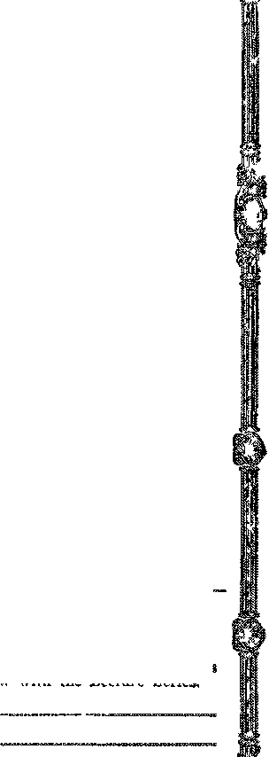

Five-Day Week at the Ford Plants ............ 802
Effect of the Five-Day Week .............. 302
Go Slower and Save the Kiddies ............ 302 A Sncc’ssful Battle with a Blizzard ........... 303 Mourners Walled too Loudly .............. 301 Another Rum Industry Smashed . . . . ..... . . 304
Uphokhng ifco Majesty of the Law ir. Ctioiin? ..... 304
Ford Sees too Much Credit ............. . . 302
Four Hundred Cars a Minute .............. 302
Across the Continent in 83 Hours ........ 303
Enter the Pullman Bus ...... . ..... 303
Akron Tire Factories ........ ..... 303
Pennsylvania Installs Safety Devices ........... 303 The B & O Motor Coaches ............... 303
The Tkansfoematton of Tubkev ............. 291 A Remabkablk Editobial [World-Wide Conditions] ...... 301 _ Mr. Nathan Straus Puts It Up to Mr. Ford . ........302
j Armed Guards for the Mails ........... . . 304
Mail Robbing Is a Poor Business ...... ...... 304
&.NOTHEB Statement From Pbesident Calles ......... 310
"And A Little Child Shall Lead Them” .......... 305 Bible Questions and Answers .............. 311 Zionism Fuinusa Pbofhecy ............... 312 Little Studies to® Little People ............. !?13 Studies in “The Hasp of God” .............. 319
Published every other Wednesday at 11" Adams Street, Brooklyn, N. Y., U. S. A., i>y WOODWORTH, HUDGINGS & MARTIN
Copartners and Proprietors Address: 111 Ailaiat Street, Sroolclyn, N. V., U.S.A CLAYTON .1. WOODWORTH . . . Editor ROBERT J. MARTIN . Business Manager WM. P. HUDGINGS . . Soe’y and Tfeas.
Five Cents a Copy- $1.00 a Ybab Maks Remittances to THS GOLDS# AGS Xotice to Subscribers; We do not, as a rale, semi a card of acknowledgement for a renewal or for a new subscription. A renewal blank (carrying notice of expiration) will be sent with the journal one month before the subscription expires. Change of address, when requested, may be expected to appear on address label within one month. Foreign Offices : British ..... 34 Craven Terrace, Lancaster Gate, London W. 2 Canadian ......... US-40 Irwin Avenue. Toronto, Ontario Australasian ....... 495 Collins Street, Melbourne, Australia South African ...... 6 Leiie Street, Cape Town, South Africa
Entered as second class matter at Brooklyn, N. Y.s under the Act of March 3, 1878
V®hxm® VIII Hjmskyloj No Y,s W®djraes^ay9 Fdbsrsxagy 1S27 Msamher
ALTHOUGH the Turks or Turanians themselves claim for the Turk direct descent from the sons of Japheth, yet historians generally are agreed that they aie of Mongol ©rigiii, from the region north and west of China, perhaps from around Lake Baikal.
Early in the thirteenth century, two or more Turkish clans were living in the northern part of Persia, having migrated thither from their own grazing lands far to the east and north. Then a war came on in which the Persians were involved. The Turks in their midst took a hand in the fracas and their side won the fight The result was that these Turks were awarded a grant of land in the northern part of Asia Minor. Omar Khayyam, the poet, was of this tribe. He died in 1123.
In the year 123S a son was born to the chief of these Turks. His name was Osman, or Othman. He was the founder of the Ottoman Empire. A just, truthful, energetic and capable man, he died at the age of 70, the ruler of a large territory, accepted as the head not only of the Turks but of the Phrygians, Cappadocians and Cili-caans, who then made up the population of Asia Minor. The modern Turk is a blend of all these ancient peoples.
Converted to Mohammedanism, and with smiie aataral genius for carrying forward the pc mliar teachings of the prophet, the Turks in Xn I took possession of Constantinople; and Wit. 'i the next hundred years, under the reign of b man the Magnificent, they threatened to ©veni all Europe. They were checked under the walls of Vienna.
In 1083 A. 1). they made another grand effort against Europe, and were barely stopped by John III of Poland, otherwise known as Sobieski. From that time until very recently the power of th© Turk has been waning everywhere.
Byzantium~~~C&nstantm&ple-^S tamb&al
TN THE year 660 B. C. a band of Dorian i J- Greeks settled on the site of the present city of Constantinople, calling it Byzantium. On the 11th of May, A. I). 330, the Emperor Constan- , tine changed the name of the city to New Borne,. and inaugurated it as the new capital of the Roman Empire. The chief patriarch of the Greek church still signs himself Archbishop of New Rome. To perpetuate the name of its founder the name of the city was changed to Constantinople.
With the wealth of the Roman Empire at his back Constantine, in an incredibly short time, made New Rome a city of churches and palaces ; and such it has ever remained. But today the royalty that inhabits its palaces are the American and European tourists. Roman emperors and Mohammedan caliphs have passed away, and their palaces have either become uninhabited or have been turned into hotels.
Along the edges of Constantinople’s waterways today stretch twenty consecutive miles of the most famous palaces in the world, or their ruins. In the Dolma Bagtche palace, 2,100 feet in length, were housed 1,200 harem inmates; while the stables had a capacity for 600 horses, and 150 coachmen and footmen.
Constantinople is surrounded with water on all sides, except on. the u^st. Like the center of Pittsburgh, the city is triangular in shape. It has great markets, consifeLng of hundreds of stops wider one stone roof—some of them so great tl’jt a guide is necessary to prevent a stranger from gettirg lost. The intricacies of its streets baffle all but the experienced. The jzoducts of every country in the world are on display in the market places.
There are three parts to Constantinople— Stamboul, belonging to the Turks; Pera, belonging to the western. Europeans; and Galata, be-
GOLDEN AGE
longing to other eastern peoples besides the . Turks. Stamboul is admitted to be the most quiet, orderly and respectable of the three sec-( tions. Pera is a center of drunkenness and vice, ? such, as westerners specialize in; while Galata, with its white slavery, opium dens and disease, 1 is admitted to be one of the moral pest holes of the world.
In Stamboul it is said that a woman may walk alone at night from one end of the city to the other, unmolested, among the “terribb Turks”. But in Pera she will soon find herself in the company of painted women from so-called Christian countries, and inert whom no one wishes to know. In Galata she would not be safe at all.
Sudden Changes in ike Capital City
BEAT changes have come over Constantinople in the last few years. Immediately after the World War, in the Pera and Galata sections, it was a “wide open” town in the worst sense in which that expression is used. In October, 1923, as soon as the control of the city was turned back to the “unspeakable Turks", 5,000 drinking establishments were immediately closed; and the Greek Christians who had been running them had to seek other occupations.
Turkey is desperately poor, but there has been a great improvement in her city streets during the past twenty years. They have been, widened, straightened and paved. Multitudes of wooden buildings have been replaced with concrete structures. Sanitation has been improved.
Once a very cheap place to live, Constantinople has become a competitor of New York in the high prices charged for things. At her best hotel a single room without bath costs $7.80 per day; while a room with bath, for one person, costs $11.70 per day. Bills are made out in Turkish, and thirty percent is added at all first-class hotels and restaurants as a tax for government benefit.
The markets of Constantinople have been closed to foreign physicians, dentists, pharmacists, etc., who were not registered there before the World War. Even the Russian hospital, as well as several others which rteie started since the war, has been ordered closed. Public drunkenness has been punished by forty strokes with the bastinado, and heavy fines.
SaocKi-Yjf, N. Sa
Constantinople has numerous and exceedingly beautiful fountains, all of white marble. Its mosques are famous. Its cemeteries, of great antiquity, extend for miles around the city and suburbs and have become a great forest. Its quays accommodate 1,200 large ships at one time. The harbor is a narrow stream, called The Golden Hom, deep, commodious and well sheltered.
At the entrance to the late Palace of the Sultan is a largo and lofty gate, styled “the high door” or “the sublime porte”, which latter has become a well-known Turkish diplomatic phrase—all political business being transacted, as supposed, under this portal.
Until recently, when there was a fire in (An-stantinople runners were depended upon to notify the fire depai tment. Four men would then return with the fire engine on their backs: and on reaching the fire they would haggle with the owner for a suitable price for putting out the fire, which usually resulted in the entire building being consumed.
The Location of the City
ONSTANTINOPLE is said to be the most strategically located city in the world.
Though often besieged it has never been captured but twice, once by the Crusaders in 1204 and once by the Turks in 1453. The futile attempt of the British, with its resultant costly sacrifice of human lives in the Dardanelles, in 1.917, is still a nightmare in Europe. Situated at the meeting point of Europe and Asia, it is in absolute control of one of the principal routes from western Europe to eastern Europe, and from western Europe to Asia. Nearly all the waterborne commerce of Russia, Persia, Rumania, Serbia and Bulgaria must pass its doer.
Above the city is the Bosporus; Wow i- toe Hellespont, or the Dardanelles as it is mw called, where Xerxes crossed on his great expedition against Greece in 480 B. C. The Dardanelles are 40 miles in length, and from one to four miles wide. Thei e is always a rapid ew-rent in the channel, which is increased in volume and velocity by the winds which blow in the same direction, with the stream for at least ten months in the year. In 1811 the poet Byron swam the Dardanelles in a little over an hour.
For three centuries no ships could traverse the Dardanelles without the consent cf the
Turks. For centuries previous the waters had been the scenes of many battles to determine who should have the right to collect taxes for passage, or in other words who should be the legal hold-up man.
The climate of Constantinople is said to be well adapted to make people easy going, -while < the gorgeous scenery makes an appeal to the outdoors such as is not the case in London, New York, Paris or Chicago. Climate has more to do with temperament than all other forces combined. It is this which is said to Le responsible largely for the charge that the Turk is indolent.
The Ottoman Empire
BOUT the end of the 17th century the Ottoman Empire embraced Egypt, Mesopota
mia, Asia Minor, Greece, Bulgaria, Rumania, Hungary and parts of Austria and Russia. Since then, until recently, it has been steadily shrinking. In 1878 its area was 1,600,000 square miles, ami its population 40,000,000. But Ballcan wars, and wars with Greece more recently, had reduced the European area so greatly that at the beginning of the World War, the area of the Turkish Empire was estimated at only 710,224 square miles, with a population of but 21,273,900.
Since then Palestine has gcme to Great Britain; while Arabia has set up in business for itself, as the kingdom of the Hejaz; and a part of Armenia has gone Bolshevik and has set up a Soviet. The present area of Turkey is therefore but 494,538 square miles, and the population is reduced to approximately 14,378,000.
In 1913 Turkish imports from all countries amounted to $112,000,000 and exports to $81,-000,000. Ten years later, after the World War had left its mark across the face of the earth, Turkish imports had been reduced to $40,000,-000 and exports to $12,000,000. Turkish business of all kinds, until recently, -was largely in the hands of Greeks and Armenians. It is said that the Turks themselves transacted only twelve percent of the business of their country.
Enter Kemrf Pash®
NTER quietly into Turkish affairs, immediately after the World War, one of those
men who change the pages of history—Mustapha Kemal, who, disdaining high titles such as sultan or king which he might have had and with none to say him nay, is content to be known by the relatively common title of pasha, -which means general.
Under the reign of Sultan Abdul Hamid H, Kemal was a student in and eventually a graduate of the war academy at Constantinople. Entering the army with the rank of lieutenant, he was exiled by the sultan because of his liberal proclivities.
He was one of the fomenters of the revolution of 1918, whereby the sultan lost his throne. He -was averse to Turkey’s going into the war on the side of Germany, and had tried to persuade the British to finance a neutral Turkey with the Young Turks, of whom Kemal was & leader, in charge o.f things.
It was Kemal’s fate to incur the displeasure of the men of his own party, and to be thrown by them into prison. Here he pored day after day over a map of Turkey and surrounding countries until he knew every detail. This knowledge he has since used with tremendous i effect.
Unlike most Turks Kemal has a broad, Germanic face, -with high cheek bones; and with his fair complexion and blonde hair he would pass for a western European anywhere. Some writers contend that Jewish blood flows in his veins. He is said to have a pleasantly modulated voice of unusual sweetness for a man. As a military chieftain he ranks among the very highest in modern history. As president of the Turkish Republic he is one of the most remarkable men of this generation.
Whereas he could easily have been a dictator likS Mussolini, with absolute powers, Kemal has labored incessantly and successfully to give Turkey a democratic government. Instead of making the National Assembly a mockery, stripped of all power, he has steadily enlarged its authority and responsibility, and has definitely sought to increase its sense of freedom and self-government. He is the George Washington of Turkey.
Almost Insurmountable Difficulties
IN ATTEMPTING the liberation of his country after the World War Kemal faced almost insurmountable difficulties. The country was in a state of ruin. Disastrous wars in the Balkans had placed the country in dire need of almost everything when the World 5YiarM which was much worse, came along and made corui-twns still harder.
AH the industries of country and city v. • re given over to the production of war nec^-ssili -3. Germany and Austria, where Turkey had formerly obtained many of her requirements., were in dire need themselves; and the rest of f e world was in arms against her. All men ?L.e to bear arms were taken away from agrieultrm ■, Turkey's main industry, with a resultant ri-calculable loss to the country as t, whole.
The country was afflicted v..fn a code 01 mixed civil and religious law?, so complicated that a commission after months of study reported that to codify the laws would take a committee of fifty experts one hundred years to complete the task, even if they worked ten hours a daw Thereupon the National Assembly, with Kemal at their head, repealed ail the old laws in a bunch, and adopted wholly the entire Swiss Civil Code. Besides the 1800 articles taken from the Swiss Code, 700 articles were taken from the Italian Penal Code and 700 from the German .Commercial Code.
The National Assembly, consisting of 200 deputies, sits in a room which looks much Iffle a schoolroom, with three deputies at each desk, like schoolboys. But they are hard-working schoolboys, and they are determined to make Turkey a modem country. Nothing escapes their attention. Even the public clock, which had hitherto shown Turkish time, was changed to agree with the time used elsewhere.
Sc effecrive were the regulations regarding the adoption of European dress that in a day practicaliy every fez in Turkey was discard *1, not a turban or a kalpak was to be seen, and Panama hats were in evidence everywhere, m October, 19’25, a new constitution was adopted, proclaiming a republic, with a president elect jd for four-or five years. Out of 197 votes cast for the first president, Kemal received 196; his o’-.n yote was cast for a friend, as a matter of courtesy.
T/?£ Passing af ths €s3iphsle
TBOK about fifteen hundred years the religicjs X and much of the civil government of Mohammedan peoples has been in the hands of religious sovereigns, called caliphs. At first there yas but the one line of caliphs. They reigned at Medina and their rale extended Io. the limits if the Moslem world. Then, for hundreds of years, there were sectional or factional caliphates, with headquarters respectively at Bagdad, Damascus, Cairo and Cordova. But for the last three hundred years, since the Turks conquered Egypt, the Sultan of Turkey has been the recognized caliph or supreme spiritual head of th© Moslem world.
Like every other union of church and state, the caliphate was one of the greatest enemies of human progress conceivable. The power was in the hands of the religious leaders. For centuries the taxes of Turkey were collected by the various religious bodies—Mussulman, Greek Catholic, Boman Catholic and Armenian Catholic—and the government had nothing to say about how they were collected, or how much of them were turned into the government treasury after they were collected. Under the privileges accorded to these religious institutions, the government was helploss in reorganizing its educational system.
As in Mexico and elsewhere, every attempt at reform in Turkey has found these antiquated and tyrannical religious institutions standing across the path of progress. Envious foreign countries have used the religious systems there as a catspaw in their rivalries with one another, and constantly supported them as one of the best means of keeping Turkey ignorant, backward and weak.
Becoming thoroughly convinced that the caliphate was a source of weakness and not of strength, the Turkish National Assembly in November, 1922, formally ended it by first ousting the sultan and declaring that the temporal authority of the sultan had passed to the Assembly, and then announcing that the caliphate as a temporal power had ceased to exist. Since then Moslems all over the world have been trying desperately to resurrect the corpse of an authority that has passed out. In addition, Kemal and his friends have closed all the monasteries and set the priests to work
The Passing &f the Sultan
UNTIL 1909 Turkey was an absolute m<w arehy. The will of the sultan was supreme Af his death he was succeeded by the oldest living male born in his harem. Until then all children born in the harem had equal rights. There was no nobility.
'• The last sultan of Turkey, Mohammed VI, was unceremoniously expelled from the country in November, 1922. He left the capital almost penniless, and died of a heart attack at San Remo, Italy, May 17th, 1926. In March, 1924, the remaining princes of the House of Othman were expelled from the country. Each was given $516 in money and told to leave the country by the evening of March 7th. The departure was so sudden that they were forced to sell their personal belongings at prices said to average not much more than one percent of their real value.
So ended the oldest empire in Europe, if we bar the pretensions of the papacy, which claims to be an empire but which has no temporal authority at this time; it was an empire at one time, but now is not, though desperately trying to regain its standing as such.
The Pawing of the Harem
HORTLY after the passing of the caliphate, the banishment of the sultan and the dispersion of his family, came new laws abolishing polygamy and requiring the registration of marriages. The harems had become too expensive for the men to handle, anyway; the women were impoverished and were rebelling, and a change was inevitable.
The Turkish family is a sort of elan. The whole elan lives under one roof. In the old days the ladies of the family lived apart, having their own apartments separate and apart from those of the men, and to a large extent had their own customs and laws. The sultana or first wife was a power, not only in the harem, but in the empire itself. The long period of three eentnrieg following ths reign of Solyman the Magnificent is referred to by the Turks as the “Reign of M7omen”, on account of the great power which the sultanas exercised during that time.
The harem suggests to western minds quite a different institution from what it suggests to the eastejier; because the latter knows that while a harem may contain a great number of women, yet most of these are the sisters, sisters-in-law, daughters or cousins of the head of the family, and not all wives or concubines as the westerner supposes them to be.
While the Turks until recently secluded their women folk behind veils and lattices, yet they had the full right to hold property and make contracts, and some have served as regents with marked success. The mother of Genghis Khan was an able and successful general
Today Turkish, women are practising law in Turkey; some of them are serving as editors;, the veil has been done away with. On® is president of a college. Much of the progress mad® recently by the women of Turkey is accredited to that bright and capable woman, Latif© Hanoum. She was the wife of Kemal Pasha, but for some unknown reason he has divorced her. Power to grant divorces rests in his hands by law.
One writer, discussing the emancipation, of Turkish womanhood and the general progress there, says:
To a large degree the harem system has been responsible for the stagnation and deeadanc© of Turkey, for it fa a nemesis even, m a “man-mad® world” that men and races may not rise higher than their estimate of women. The state rest® upon the foundation of the family. With the passing of the harm on® may at least hope for the regeneration of the Turkish peopla.
Edueati&n and Art
IN THE period of the renaissance, 1400 to
1500 A. D., Constantinople was the library of the world. It is to the credit of the Turks that when the capture of the Eastern Roman Empire occurred, in 1453, these libraries, which had been, in process of accumulation for a thousand years, were not disturbed.
It cannot be said that the Turk has been a patron of literature, but it can be said of him that he has been a collector and preserver of it It is said that there are even now in Constantinople immense quantities of rare old manuscripts in Greek, Latin, Hungarian, Arabic and other eastern languages, never yet examined by modern scholars, and sure to throw much light ou the history of past ages.
In the matter of education the clergy have been the curse of the Ottoman Empire, as they have been in every country. The teaching of the children lias been entirely in their hands. As a consequence, the Mohammedan teachers h?ve taught the children wider their ear© that Mohammed knew it all, and that there must never be any progress beyond the mixture of sense and nonsense that goes to make up that palpable plagiarism on the Bible, the Koran.
The Armenian and Greek Catholw schools have been just as bad, but along different Jims. Each of these schools has been a breeding pla 'e of Armenian and Greek nationalism, which bog had on the one hand the objective of a great Armenian state in the central and eastern portions of Asia Minor, and on the other a gret t Greek state covering the rest of Asia Min.'1’, with Constantinople as its capital.
Under the leadership of Kemal Pasha ti e Turkish government is now taking up vigorocs-ly the work of teaching its own citizens something besides the nonsense of th- Koran. Old men with white beards are now going to school and learning their loitcis; over 70,000 adult Turk’s aie going to school for the first time m their lives.
L odor the government of the dead hand if Mohammed, and of the stupid, bigoted mid superstitious priests who have made the teachings of the Koran clear (?) to the common people, painting, sculpture and architecture ha\e been a dead letter in Turkey for centuries. The first public introduction of human statuary into that land took place when a statue of Kemal Pasha in citizen's clothes, executed by an Austrian sculptor, was recently unveiled.
The Turkish, custom of interior decoration is to hang the walls with carpets and silks. Owing to this custom there are no pictures on Turkish walls; although some of them are diversified with colored plates and tiles, and wi h inlaid brackets supporting lightly engraved brass vessels.
Shackles Slowly Falling
TXT HEN one considers the grip rhat tut Jl< «-’ » lem faith has had upon the Turks. <.~d still has, too much prog’ww ’its! not be . -peeled forthwith. Turkey is just row trying to live a western life with an eastern j dig ion, m d the two do not mix.
Some idea of what effect the Moslem reli/cn may have upon a man may be judged from lie fact that some devout Arabs who have made the trip to Me<wa, and who have ’here seen the sacred stone from which Mohammed is supposed to have ascended into heaven, have borp known immediately to blind both tbtir eyes that they might not thereafter behold anything less holy. “ “
The Turk is not friendly to the Christian religion, because his experience with those who profess the Christian religion has been most unhappy. He has been imposed upon at every; turn by Christian (?) nations that wanted his lands or Iris oils or the Dardanelles or something else, and that have lied to him and about him, in the newspapers and out, until his confidence in them and in their religion is nil.
But Mohammedanism is failing the Turk, and just in God’s due time. Whereas only a few years ago every Turk was required by law to observe the fast of Ramazan, yet it anpears that this year at the College of Galata-Sorai, where its observance is optional, only 50 out of 700 paid any attention to it. What the Turk needs is the ti tifli, and this will be his inheritance sho i’dy.
There is now complete freedom of the press in Turkey, except that newspaper correspondents must confine themselves to the truth and no longer make it their business to poison the minds of the world against Turkey. Otherwise they are likely to get their walking papers out of the country, as happened in three hours to the correspondent of the London Times.
Hou> Terrible Is the Turk?
VERYBODY in western lands is familiar with the expression “the terrible Turk"’, and takes it for granted; but a study of this matter brings to light some altogether unexpected things.
It is conceded that the Turk is of Mongolian origin; but in six centuries, through forcible intermarriage with Caucasians and the living of an independent and indolent state of existence, he has become Caucasian in. appearance and has developed a fine, robust constitution which makes him a dreaded foe. A writer says that “defiance and confidence, resulting from centuries of domination, indifference, nonchalance and lack of ambition developed from the fatalist religion he professes, are the unmistakable signs of his countenance”.
But now note what intelligent men from Christian lands who have spent years in Turkey have to say about the Turks and then’ ways. Their testimony should be given more weight than those who have some religious, political or financial axe to grind.
Pierre Loti, the French writer, says:
I have lived for a long time in the Orient; I have mixed with all classes of society; and I have become absolutely convinced that the Turks alone, in all that mass of irreconcilable races, are at bottom honest, that they alone have delicacy of feeling, tolerance and courage, combined with kindliness.
Alex. L. Jenkins, professor of Mechanical Engineering at the University of Cincinnati, says:
After a year in Turkey I wish to state that the Turks are one of the finest peoples I have ever known, and also one of the most grossly maligned. A Turk’s word is as good as his bond. He will never fail to make good his promise or verbal contract. Constantinople, with its many nationalities, has a reputation of being a city of commercial robbers, filled with liars, cheats, swindlers and every form of dishonesty. With this in mind I approached a Christian missionary for advice which might protect me from these bandit robbers. His only suggestion was the simple suggestion that I confine my business dealings with pure Turks. This I did, and was not only satisfied but greatly pleased. They axe truthful, honest, just and most courteous.
Paul Bowerman, Instructor in the American College in Constantinople, says:
Ae an instructor in an American college, whose students were drawn from the wealthiest and most respected families, I was particularly fortunate in coming into dose and intimate contact with young Levantines of every nationality. It was not surprising to find them almost universally dishonest; but little by little I began to discover that dishonesty could be separated into two different categories, conscious and unconscious dishonesty. Into the first category fell the Greeks, Bulgarians and Armenians—all those, in fact, who lived nominally in the western fashion, who were Christians. These boys knew well enough the difference between right and wrong, as we understand it, and deliberately chose the wrong. They would never admit cheating, even though I had caught them red-handed. The Turkish boys, on the oilier hand, were a novel experience. Quite as dishonest as the others, they could see no good reason for being otherwise, and were therefore quite fees to acknowledge their guilt.
The i«ne write says;
The Turk is no more perfect than the rest of us; but, like most of us, he is good enough when left alone. That is ail he wants. The years of meddling by the European powers have exasperated the Turks, at intervals, to the point of ferocity. ... Ue saw his words twisted into unheard-of promhes; he saw the battleships ateared for action in his harbor and ready to enforce
edfete that iaued ti» Allied wad he suffered the helpless rage of one who knows, he has been cheated and can see no means of redress. . . . The Armenian massacres were inexcusable; hut the world docs not know that equal excesses were committed on both sides, that one Turk has been victimized for every Greek or Armenian. ... I have seen countless photographs of Turkish men and women beheaded and piled in heaps. I have seen tens of thousands of Turkish refugees driven out of Thrace and Smyrna by the treaty of Sevres, which gave that territory to Greece, and I have listened to the ghastly story of their eviction. That, too, has been suppressed.
Another, an American missionary in Turkey, says:
There are two Turkeys; the real Turkey, and that existing in the imagination of foreigners. And the reading of history has a tendency to convince one that the religious persecutions and massacres with which we are so tragically familiar had their origin in that baleful fusion of race, religion, and polities which is the curse of the Near East, rather than in religious fanaticism pure and simple.
Tte SMO to Xngora
/CONVINCED that the safety of the Turkish Republic lay in getting away from the guns
of Christian battleships, the Young Turks surprised the world by moving their capital from Constantinople hundreds of miles into the interior, to the ancient city of Galatia, now called Angora.
Galatia is the same city mentioned in the New Testament, to the Christian church of which the Apostle Paul addressed one of his epistle®. It was founded by Midas, king of Phrygia, in remote antiquity. At one time it was a great city, in view of its location hundreds of miles badt from the seacoast; but declined with the rise of Constantinople. Angora is famous for its eats and its goats.
Conquered in tarn by Alexander the Great* Mithridates, Pompey, the Saracens, the Crusaders, Tamerlane and the Turks, Angora has plenty of history, having been considered $t one tine the most beautiful provincial city of the Roman Empire. The air there is exhilarating and full of sudden changes. The trip from Constantinople is made by rail in twenty-four hours. Sleeping-car and dining-ear sendee is maintained.
The Burning of Smyrna
ONE of the most recent horrors charged up to the Turks is the burning of Smyrna. Like
Constantinople, Smyrna was a cosmopolitan city, the fig and the rug city of the world. In 1909, 110,000 camel loads or 49,500,000 pounds of figs were marketed here. For centuries it has been the most important place of trade in the Levant.
At the time the city was occupied by the Greeks, after the World War, there were then 10,000 more Turks than Greeks in the city. If the Greeks had let well enough alone they would have been there yet; but they conceived the idea of bringing the whole of Asia Minor under their control, and it was a bigger job than they bargained for.
At length the Turks, goaded to desperation, Suddenly came to life. An army was hastily collected, and under the brilliant leadership of Kemal Pasha the Greeks were literally swept into the sea. The Turks had had much provocation. Not only had their country been penetrated deeply by hostile forces, but their seacoast dties had been bombarded by Greek warships, all in violation of the law of nations.
On their retreat to the seacoast the Greeks prepared their own rain by burning cities, ruining crops, murdering and maiming noncombatants, and thus doing everything possible to inflame the minds of their pursuers. Hundreds of villages were thus rained, with, the result that 'thousands of Turkish refugees starved to death. It is hard for soldiers to be kind under such conditions affecting those they love.
Nevertheless, Irving T. Bush, President of the New York State Chamber of Commerce, says concerning what followed:
The true story of Smyrna will never be known. When the Greek army, in their retreat, reached the sea, the Turks were close behind. American, eyewitnesses have fold me that the first Turkish cavalry to enter Smyrna conducted themselves well. The officer in command rode rt the head of his men, calling out to the Greek soldiers to throw their arms into the sea. Nearly all did so, but two substantial American business men. of excellent character saw, at different places in the heart of the city, two Greek soldiers throw band bombs into the ranks ©f the. Turkish cavalry. The officer was wounded and two of his men killed. One at these Americans, who lad lived in Smyrna, for years, srid he marveled at the . mtraint of the Turk when he knew what desolation and
the Greek wops had Mt behind,
The captain of the freighter “Winona”, which was the last steamship to enter the port before the Turks regained the city, reported the occurrence as follows:
I stood near the custom-house and saw the Turkish advance column march through the main street in an orderly manner and hoist the national flag. So far as I could learn, the regular troops under Kemal Pasha behaved well. Civilians were killed and women attacked by the Turkish bandits, who had been living in the mountains since the Greeks entered the country in the spring of 1921. . . . The Turkish soldiers, I later learned, were ordered to stop the slaughter, but could not do much. The soldiers themselves were incensed against the Greeks, who had fired every village in their retreat toward Smyrna.
Finance and Transportation
HpuBKEY, notwithstanding her loss of terri--*• tory, came out of the war in better financial condition than any other European belligerent, for the reason that she had no reparations to pay and no foreign war debt. The extravagances of former sultans must still be atoned for, but the currency has not been inflated since 1918.
The Young Turks have been going in for engineering, and as a consequence they are improving the transportation conditions, which needed improving as badly as in any part of the whole world. Even to this day the freight in Turkey, including safes and pianos, is carried, for miles on the backs of men, called hamels. AH the moving of household goods from one part of a city to another is done by hamels.
In the western part of Turkey there are 2795 miles of railroads. Much of this mileage was destroyed by the Greek invaders, but has been rebuilt by Turkish engineers from the ruined materials left scattered behind. Most of the country roads are very bad also, but the National Assembly has passed a law requiring every male between the ages of eighteen and sixty to do from six to twelve days’ work on the roads every year; and under the skilful direction of educated engineers this is beginning to tell. Motor tracks and automobiles are making their appearance in Turkey.
Agrieultun and Busbandry
FARMING methods in Turkey are an Equated, yet the soil is fertile capable of large crops. Turkish figs, TurMsh tobacco, Turkey
red wheat, and Turkish attar of roses are still famous. Other less known crops which are famous in certain markets are Smyrna licorice, Angora pears and Merzifoum apples. There are 20,000,000 acres of neglected forests in Turkey.
Besides the usual domestic animals of the West, the Turk makes use of the camel and buffalo. He has also to contend with many wild animals, and must take into account the lion, hyena, jackal and wild boar.
Manufacturing and Mining
THERE has never been a geological survey of Turkey, but it is known that there are valuable copper mines at Arghana—-valuable deposits of silver, zine, iron and antimony. There are also supplies of emery, borax, coal, petroleum, arsenic and mercury. These all need development.
Tn 1923 the National Assembly ratified the Chester Concession, which empowers the Ottoman-American Development Company to develop oil, copper and iron deposits; build railways, canals, ports and cities; engage in forestry; install telephones, telegraphs and electric lights; construct hotels, health stations, banks and observatories. It is also to build for the Turkish government, in some open and appropriate spot, a perfect capital, with buildings surpassing those of any existing capital. For some reason this concession is slow in functioning. Perhaps it fears the new liberal government.
Turkey has few factories, though there are important productions of rugs, carpets, leather, oils and soap. New laws have been passed regulating these and all other industries, in the interests of the workers.
Mining companies must provide houses, baths, dispensaries, kitchens, schools and mosques for their workmen and children, and must also provide working clothes. All forced labor is forbidden. Children under sixteen cannot be employed below ground, nor under thirteen at all. Meals must he provided at a uniform price. The working day is fixed at eight hours, with double pay for overtime. In ease of non-payment of wages when due, coal or other assets can be seized and sold on behalf of the workmen. There is enough in this to frighten New York capitalists, who do not believe in such things.
Getting Rid of the Patriarch
emau Pasha is certainly a long-headed man.
Not content with getting rid of the Moslem caliphate, which has made its headquarters in Constantinople for three hundred years, he has also gotten rid of another religious incubus; by taking advantage of a technicality he quietly dispossessed the Patriarch of the Greek Catholic Church, which had its headquarters in the same city, and which for five hundred years has been an international nuisance. Kemal then ap« pointed a Turkish successor.
There was a general howl when the GreeK Patriarch was ousted; the Catholics said that Kemal the Mohammedan was persecuting Christians; but the man whom he ousted was discovered acting as a spy for the Greek government, and since he had personally entered the country since October 30, 1918, and therefor® automatically came under the exchange provisions, Kemal thought it would be a good time to give him the air and acted with his usual promptness and effectiveness.
The smug church press yelled its head off, with the usual papal line of talk that “the ecumenical patriarchate has always remained beyond the jurisdiction of international conferences, because of its spiritual [1] and exclusively religious [?] character”; but the old boy had to go, and the air in Turkey is already better for the change. Kemal is a 32nd degree Mason. At present the Greek Patriarch is in Greece, traveling throughout the country and making what trouble he can for the International Bible Students and any others who dare to use their brains in his presence.
The Treaty of Lan same
AFTER the World War the powers dictated the Treaty of Sevres, whereby Turkey was to give up almost all her European territory, including the city of Constantinople, with a neutral zone on both sides of the straits. Turkey was thrust back into Asia and the Greeks were encouraged to take what was left.
This program all worked nicely except the last part, namely the part the Greeks were to play; and but for Kemal Pasha and his knowledge of the Turkish map that might have succeeded, too. But it failed; and after driving the Greeks into the sea at Smyrna the Turkish
80© troops suddenly showed up in overpowering strength on the eastern shore of the straits.
It was not convenient at that time for the British to engage in a new war with the Turks, so peace negotiations were opened. The result, after five months of deliberation, was that Turkey got back all she had lost, except that the control of the straits is now, theoretically, in the hands of a Straits Commission, consisting of one representative each from Turkey, France, Great Britain, Italy, Japan, Bulgaria, Greece, Rumania, Russia and Yugoslavia. If the United States signs the treaty it will have a representative there also.
In negotiating the Treaty of Lausanne, which was to all practical purposes dictated by Kemal Pasha, he made it plain that Turkey is determined to get rid of the foreigners in their midst who have made them so much trouble; hence a time limit has been set within which they must wind up their business and depart. No man who is not a Turk can hold office. All signs have to be in Turkish.
With outward sympathy for the Armenians, inward sympathy for the Greek Church patriarchate, practical sympathy for the Mohammedan caliphate, and actual sympathy for the financiers of Great Britain who are ambitious to take over as much of this earth and its oils and other valuables as they can hang on to, the bishops of the Episcopal Church are striving hard to discourage Uncle Sam from approving the Lausanne Treaty. Thus far they have been successful.
The British occupation of Constantinople «ost John Bull $29,115,000, for which he has received nothing in exchange. He has not even secured for the Allies the control of the straits, which are firmly held at both ends and on both aides by the Turks.
Dr. Charles F. Gates, President of Robert * College, Constantinople, who has lived in Tur-‘ key for forty-five years, says:
The Turks are firmly convinced that the European nations use the protection of the Christians only as s pretext for interfering in the internal affaire of Turkey and for the furtherance of their own selfish aims. This exasperates the Turke to the last degree and makes them more determined to get rid of the Christiana in order that Europe may have no pretext for interference.
Bsoortnr, N. I.
Kurdistan and Mosul
TT IS well known that Britain and Turkey came J- very near going to war over the Mosul oil fields, for two reasons: (1) Because British oil men wanted the Mosul oil; and (2) because Britain ’wanted the key to Kurdistan, so as to erect another buffer state on the road to India.
It was a clear case of commercialism for Britain to hang on to the Iraq mandate and get it renewed for another twenty-five years; everybody knew that the real reason for this undue interest was the Mosul oil that was involved. But Turkey has a double reason for hanging on so stubbornly; Kemal Pasha knows that if he loses Mosul he will not only lose the oil but will lose control of the 1,CGO,CU) Kurds who constitute an important part of the population of the Turkish Republic.
These Kurds tire Moslems, renegade Armenians who have accepted the Moslem faith, and are notorious the world over as one of the most cruel people in the world. The sultan used to employ Kurdish soldiers in his campaigns against the Armenians, and they .could always be depended upon to play their part v> ell. They have been known to dispose of unwelcome prisoners by tying the luckless creatures .hand and foot and then rolling them off from declivities, taking pot shots at them as they went.
If Britain could control Kurdistan (which lies partly in Turkey, partly in Persia and partly in Iraq) it would eventually place all these countries more firmly under British influence. Mosul is the key to Kurdistan, and for that reason Kemal will not let it go. There was a serious outbreak of Kurds in February, 1925, which Kemal finally subdued, hanging twenty-two of the leaders.
An agreement regarding Mosul was finally reached which gives Turkey and the Standard Oil Company a part of the Mosul oil, and gives Turkey some advantages from a military point of view. The dispute was finally settled by a Swedish gentleman now deceased, Hjalmar Bran ting.
The Present Outlook
OF LATE there have been hints that Turkey’s next troubles will be with Italy, and that for no other reason than that Italy wants a place for her surplus population and is said to have concluded that Asia Minor would be a
good place for them. It has even been hinted that Italy is arming Greece, and that the live countries will make an attempt to regain the ground which CHeece lost when Smyrna was burned. Italian firms are known to be now making for Greece, tanks, armored cars and other munitions, of the value of $10,001),000; and Italy is known to have advanced the money to buy them.
But secure in Ills mountain capital Kemal Pasha, with a half million of the bravest trained soldiers in tli° world. to confident of his ability to harn-Ie any situation which may develop. He knows that Em ope in general, that is to say. the League of Nations, does not dare openly to encourage any general campaign against Turkey, else Turkey would at once go Bolshevik and throw in her lot witn Russia, come what may.
There has been a generally good understanding between the new Turkey and the new Russia for some years. This is said to have been noticed at the Lausanne Treaty conferences; and is accentuated by the treaty between the two countries, executed this year, whereby each binds itself to abstain from attacking the other or joining in any agreement directed against the other.
It is true that Turkey is deciding what foreigners may live in Turkey, and where; and in what businesses they may engage. All banks and big corporations must employ fifty percent Moslem Turks or go out of business. Their books must be kept in Turkish. They must pay war tax, income tax, education tax, two and one-half turnover tax, and other taxes.
All this seems severe. No doubt it is. Perhaps it was severe for the Kemal government to demand that Coiistantiuople policemen must shave off their beaids: but there was no help for it. These had to come oft'. But in view of all that this man Kemal has done toward establishing a true republic, the following survey made by an American writer seems quite in order:
Attested as his pledge is by the Liberation of women, restrictions of the harem, the attempt to establish a sound judicial system, separation of church and state and experimental adaptation of the economic policies of the modern states to Turkey”"s medieval conditions, however grotesque and unhappy the consequences in some eases, one venders why America has, of all nations, shown no official sympathy lor this people struggling toward self-government out of a broody past which it did not of-ficnlly denounce at the time by a severance of relations, but from vhich thc-y are now trying to sever themselves.
THE Log Angeles Times contains a remarkable editorial from which we quote in part:
England, saved from debacle only by a fortunate chance, is a caldron of unrest, with a stubborn coal strike paralyzing her industrial ganglia.
In the Ear East the Philippines clamor for An dependence”, the while rival world powers wait to fail to blows over possession of the islands the moment they forsake the tegis of America.
Religious riots are spilling blood in the .streets of Calcutta. Hindus and Mohammedans, Brahmans, Buddhists, Parsees and Aryans wait only for the lifting of the restraining “white” hands to fly at each other's throats.
Earth’s oldest city, Damascus, lies in. ruins where overlords and underdogs have clashed. France turns from a Pyrrhic victory in Morocco to fresh conflict in. Syria.
Italy, Spain, Poland, Greece, Portugal grasp at the straw of military dictatorships. European democracies fumble and fail before financial emergencies.
Watchman on the mountain height, tarn back the pages of history and take hope.
In the twilight of the old world were forebodings, inurmurings, confusion. The sands of the centuries were running out.
That which Jeremiah feared, Ezekiel foresaw and Amos denounced had come to pass.
The Ark of the Lord was lost—Zion’s spiritual strength had failed. The Holy City had passed from one bondage to another, to Egypt, Babylon, Persia, Antiochus of Syria and finally to the Roman conqueror, Pompey. Ills creature, the bloody Herod, reiguwi in Jerusalem.
With the downfall of Atheros the golden age of art had been submerged. The Egypt of the Pharaohs retained but a shadow of its ancient glory. The Persia, of Cyrus had crumbled at the gulf of I«sns.
Rome was in revolut ion, the old republic torn to pieces by the rivalries of its victorious generals. Over the leaders of enlightened thought, its priests, artists, philosophers. lawmakers in Chaklea and Judea, in Hellas and Persia, in Sjna and Egypt brooded the dark angel, Azracd.
The military dictator was abroad in the land.
Change, unrest, ovcrtrirniug—yet so the woild passed from the darkness of B. C. into the light of Anno Domini
[Radiocast from WBBB. on s. wave length of 4164 meters by the
Five-Day Week at the Ford Plants
AT THE Ford plants the five-day week has been made a permanent feature. Since 1919 the minimum wages of workers at the Ford , plants have been $6 per day. Men with prison records are not denied work at the Ford plants, nor is there any just reason why they should be denied employment anywhere. In Japan it is against the law to discriminate against them, and it ought to be so here and everywhere. Many of our richest malefactors never go to prison at all.
92^65 Raises of Pay
THE Ford Company has raised the pay of 92,466 employes, to offset the inauguration ©f the five-day instead of six-day week. It is claimed that this is a purely business move, that it is believed that the men will produce as much in five days as in six, and that with an extra day of leisure there will be more attention given to mental development than has hitherto prevailed.
Effect of the Five-Day Week
Ma. Mellon, Secretary of the Treasury, is afraid that Henry Ford’s five-day week, if put into general use, would seriously curtail production. Suppose it did! Would it not be better for the workers to have reasonably regular work during five days a week than to drive ahead overtime for a few months and then have to lay off in complete idleness while stocks are sold offl Ten years ago the average worker produced twenty-five percent less goods than he does now; but even then he occasionally bad long idle spells, because the output could not ae disposed of. It is admitted that a shorter work week would greatly increase the sale of books and other literature.
Ford Sees Too Much Credit
TOO much credit always means a smash at some time or other, and your Uncle Henry Ford sees one coming now unless the American people ease up some on their policy of buying things on credit Ford says very truly that today old and young alike have been talked into pledging their freedom for months and years to come, that myriads of them own nothing. Not only are they exchanging their freedom for goods, but in many instances they are exchanging for the cost of persuading them to buy, and in part for buying on time.
«oa
<fe Nathan Straus Puts It Up to Mr. Ford
TN THE firm belief that Henry Ford has been A mistakenly led into a campaign of slander against the Jewish people, Mr. Nathan Straus, at the National Conference on Palestine, put it squarely up to Mr. Ford that together they should appoint a committee of ten Christian men, eight of whom Mr. Ford could himself select, while Mr. Straus would select the other two; and Mr. Straus believes that if Mr. Ford submits the facts to this committee there can he but the one answer. It looks as if it was up to Henry to either put up or shut up.
Go Slower and Save the Kiddies
IN THE month of October, in New York City, nineteen children were killed in the str^e+s by automobiles because they tried to cross at some other place than the Crossings; four more were killed at the crossings themselves; four more ran off the sidewalk into the street and were slain; three were killed stealing rides: three because their view was obstructed; three because they were playing in the streets; and six more for other reasons; total, forty-two in one month.
New Elevated Motorway in Sight
NEW YORK, which was the first to elevate its street railway traffic to overhead structures, is proceeding along logical lines in 'ts proposed construction of a new elevated motorway from Canal Street to its junction with Riverside Drive. The structure will carry six lines of traffic, enabling it to handle 5.000 cars hourly in each direction. At convenient intervals there will be ramps for entering and leaving the structure, but no crossings will stop traffic.
Four Hundred Cars a Minute
WHEN the Holland vehicular turmel under the Hudson river is opened for traffic next March it will have a capacity of four hundred cars a minute, half of them pouring out on the Jersey side and half of them on the New York side. The ventilation of the tunnel, or of the two tunnels (for there is one each way) is such that the entire air of the tunnel can be changed in forty seconds. The work will have taken five years and is estimated to cost $46,000,000. Over 115,000 tons of cast iron tunnel lining were used in its construction.
Across Continent in S3 Hours
IN A Wills-Sainte Claire roadster Louis B.
Hiller of San Francisco has completed the trip from San Francisco to New York, 3,367 miles, in 83 hours, 12 minutes, which is ten hours less than the fastest time ever made by a railway train between the two points. An average speed of more than 40 miles an hour was maintained the entire distance. No stops were made except for gas, oil and sandwiches.
14 Successful Battle with a Blizzard
TWELVE miles from a hospital, and with snow four to six feet deep in drifts across the roads, an Iowa physician declared that only an immediate operation would save the life of a five-year-old youngster. This was at nine o’clock at night. The next morning at three o’clock the youngster was at the hospital and the operation was successfully performed. The farmers of the entire countryside turned out with their teams and cut the road through.
Bus Lines Cmtinae to Grow
NOT all bus lines operate at a profit, but the bus business continues to grow nevertheless. An official count on a recent day in New York showed that 7,960 persons were brought into the city from New Jersey points by this means. It is probable that bus lines operating across state boundaries will be brought under Interstate Commerce regulations.
Sator the Pullman Bus
THE Pullman Bus has entered the transportation field. There are at least three routes where the buses run all night, one from New York to Boston, one from Denver to Amarillo, Texas; and the third, from Seattle to Los Angeles, extends practically the whole length of the Pacific Coast. In some of the buses on the Pacific Coast there are kitchenettes, with stewards in charge who serve excellent meals,
Akron*® Tire Faet&ries
AUTOMOBILE tires have been the making of Akron, Ohio, the population of which, jumped in ten years from 69,067 to 208,435. The eleven great tire factories at Akron turn out about half the entire tire production of the country. The value of the product of those eleven plants last year was $480,300,347. There are 115 other tire plants elsewhere, mostly in Ohio.
150fl&9 New Strap Banger®
THE business population of the new buildings constructed in lower Manhattan during 1926 is estimated at 150,000, which means that that many more people must be squeezed into the already overcrowded subways and other means of communication daily. The streets of New York are already so filled with automobiles that one can barely get across them in safety. Some time somebody will discover that the situation is impossible and the erection of skyscrapers will cease, as indeed it should.
Five Winter Days in California
THE tired Chicago business man can now work all day Friday, get his supper at home, hop on a train at eight o’clock at night and the next Monday morning arrive in Los Angeles at 9:00 a. m. lie can stay there through five perfect days of heavenly sunshine, leave there at six o’clock Friday night and be back in Chicago at 11:00 a. m. Monday, having lost but one week from his work. No doubt this new train service will be much appreciated and much used.
Pennsylvania Installs Safety Devices
PROBABLY the largest installation of safety devices ever undertaken is that of the Pennsylvania Railroad, now engaged in installing $8,000,000 worth of train control devices. Th® Pennsylvania may have been spurred to this act by the recent accident east of Pittsburgh; but in any event it is doing the wise thing, and bound to increase its patronage materially at the expense of other roads not similarly equipped.
The B and O Motor C&swhe®
WHEN the through trains of the Baltimore and Ohio Railroad arrive in Jersey City nowadays, they find standing beside them a Beet of motor coaches which take the passengers tree of charge to the Grand Central Station, ria several routes, or drop them off at hotels or Other central points enroute. These motor coaches are run both ways on schedule, so that, for all practical purposes, the B and O now has railroad stations all over the heart of New York.
Rcd/roads Increase Dividends
rp.HE Baltimore and Ohio has raised its divi--*• dend from five to six percent. The Pennsylvania has increased its dividends from six to seven percent and, it is said, will water its stock once more shortly. The New York Central already pays seven percent, and will water its stock $100,000,000 right away. We hear nothing now of these roads raising the wages of their employes, or of their helping the weaker roads. Somebody once said, “Them as has gits; and them as hasn’t don’t git.”
The Vanishing Farm Wagon
TWENTY-FIVE years ago the farm wagon was a necessity. About 600,000 of them were turned out annually. Besides these, there were 1,500,000 carriages produced. In addition, there were horse accessory lines, whips, harness, blankets, horseshoes. To all intents and purposes these great industries of twenty-five years ago have now ceased to exist
Mourners Wailed Too Loudly
A BUNCH of Detroit mourners are wishing now that they had mourned more softly.
A gang of bootleggers rigged up a fake funeral procession. As they passed through Detioit streets they mourned so loudly that the police suspected something wrong, made an investigation and seized the whole cavalcade. In the hearse were fifty cases of beer. The mourners also were well supplied. Next time they will probably be more restrained in their grief.
Another Rum Industry Smashed
ANOTHER rum industry was smashed in Los
Angeles when one of the customs inspectors found that an innocent-looking load of lumber was in reality a skilfully constructed box within which were $22,500 worth of Scotch whiskey. Entrance to the box was from the rear. A section of the lumber pile when pulled out disposed that the whole interior was hollow.
Refused to Stay Discharged
A CLERK in the Chicago City Hall was discharged on October 15th, but after three weeks had elapsed was still found at his desk. A raid by prohibition agents disclosed the fact that his principal business was and had been bootlegging. He was arrested along with two other bootleggers whose offices were also in the City Hall and whose business was conducted, among the city employes housed there.
Armed Guards for the Mails
THE government has decided to protect the
United States mails by armed guards. It is also requesting large concerns to pay by check instead of by cash. Additionally, a request will probably be made to ask the death penalty for armed attacks upon the mails The effort is to reduce the attacks upon tie mails, which have now become a nation-wide curse. There is also a considerable amount of petty tampering with the mails from the inside. Letters to Protestants often fail of reaching their destination.
Mail Robbing is a Poor Business
THERE is a quantity of petty mail robbery in recent years, such as the stealing of letters with money in them, which there seems no way to uncover adequately; but the larger mail robbers are out of luck. Of $1,408,540 lost in such robberies in one year, over half of the money 'was recovered within a year, and the robbers got terms averaging about seventeen years each.
Upholding the Majesty of the Law in S. C.
TTNDER the title “South Carolina’s Shame”
The Nation discloses that several hours before the Lowman family, of Aiken, S. C., were to be lynched, it was known in the capital of the state a hundred miles or more away. When the time for the lynching came the prison in which were the unfortunate prisoners was opened by the sheriff himself and he personally helped to drag a woman down to death at the hands of the mob. The governor of South. Carolina has been furnished with the names and addresses of twenty prominent men of the community who participated in the murder. It ia now up to him to prove that he is a man.
bedtime story radiocast from Station WBBH cisa ;
GOOD evening, boys and girls! I know it is drawing close to bedtime for many of you;
but before you take yourselves to bed I want to tell you a story. It. is a story that all of you. will see come true some day. And when it does come true it will make all of you glad, and your gladness will stay with you for ever and ever.
Mow I say this story is going to come true, not because I am a prophet, but because a man who was a prophet of God tells us about it. You all know what a prophet is. A prophet is a teacher who tells the people about God. He tells what God is going to do to make everybody who has lived on earth happy, if they will only learn of God ur_d obey
Almost evciytody or earth today is unhappy over something or ether. Many times each of you is sad or ummupy. You sometimes cry and feci bad, not because you are sick or have hurt vouTscdves or have lost something, or have failed to do right, but because your fathers and mo’I ers or your friends and playmates have troubles and aches and palms.
Maybe someone whom you love has died and they have buried him in the ground, and you do not see him or get the chance to talk and play with him anymore. Oh! how you miss him! You wonder where he has gone, and whether you will ever meet him again and have good times together. And as your heart aches, you wonder why all this trouble and sorrow come; don’t you? This is a big secret; but God opens up this secret to us in His Book, called the Bible.
"Why God Used the Prophets
GOD used His prophets in writing the Bible.
Now I can imagine a question popping up in your minds: Why did not God write the Bible Himself? You see, it is this way—God is up in heaven; He never shows Himself to any man ©r woman; no human being has ever seen God; He is too great a Person to be seen of mon; He is too wonderful and too glorious.
God made the dazzling bright sun; and you know that you can. hardly look right up at the sun without hurting your eyes or getting almost blind. God is brighter and more glorious than the sun. How then could any of us thing of looking at God without being blinded? So it is good for us that He keeps Himself out of our sight.
s
. wave length of 416.4 meters, by Fred W.
The Bible says that no man can look on God and live.
Neither does God talk directly to any man. When He wants to tell man something He sends a messenger to tell it. Some of His messengers have been good angels from heaven, who have showed themselves to men and women and have talked with. them. Most of the time, though, God has used His prophets as His messengers. (
Here another question jumps into your mind, ■ and you want to ask: But the prophets were < only men; how then would God tell His mes- ’ sages to the prophets? . . . How you children i do ask hard questions! But I think I can ex-, plain this one to you so as to make you understand. The prophets gave themselves fully over , to God, to let Him use them. If God wanted । them to speak for Him or to write for Him, all right. God would therefore use His holy spirit; upon the prophets whenever they spoke or wrote for Him. That is what a Bible man by the name ’ of Peter says.
Do you know what the holy spirit isf Very, many people do not. The holy spirit is the power that God uses. It is a holy power which God uses to do all His good works. It is an unseen power; by that I mean that you cannot sea the power itself, but you can see what the power does.
How the Prophets Heard God Speak
HpHE prophets did not tell fairy tales or make up stories to entertain, the people. God used His holy power or spirit on them to put into their minds just what to write and what to say. How could that be done? is another question you want to know. Now there are many people who laugh and say that it never was done and cannot be done, and many of these people are looked up to as being great thinkers and great teachers and. great preachers. But just because they laugh, that does not make the Bible untrue.
I can prove to you right now that it can be done. Are you hearing me talk? Yes, I can imagine all of you saying that you do. But do any of you see me? “No!” you answer. Am I close enough to any of you that I could reach out and touch you right now? “No 1” you answer, “you are too far away to do that.” That is true; most of you boys and girls are many miles away from where I am here at Radio Station WBBR on ^Staten Island, New York. Some of you are in fact hundreds of miles away from hero, and could not see me even if I went up in a balloon into the sky; and my voice is probably no stronger than that of your father or brother, certainly not strong enough to make you hear me all this long distance of miles and miles.
Now I am going to ask you some questions: How is it that you are now able to hear me speak, when I am so far away from each of you ? “Oh? you say, “it is the radio.” Righto! as they say in England. It is this power called radio that makes it possible for you to hear me, even though we are far apart.
But ukiy is it that you can hear my voice through those ear phones or through that loudspeaker horn? Is there any wire connecting me with your radio set? No! all I do is to speak into a little instrument before my mouth here in this studio, and then the powerful machinery here at this station sends my voice out into the air on radio waves.
Now as my voice goes through the air on radio waves no one can hear it or see it. That is just the way with God’s holy spirit. It is His unseen, power which He sends down from heaven to earth that spoke to the prophets and told them how to write the Bible, even though they could not see God Himself.
You, or your brother or sister or someone else, sit down at your radio receiving set and turn the dial around. Suddenly you hear my Voice. The radio waves carrying my voice have traveled, unseen and unheard, all the maiy miles through the air to your home. You did not have to open the door or the window to bt the radio waves in, did von? If you have an inside aerial then those waves went right through the walls of your house and touched your aerial wares, and lo! the radio waves make your loudspeaker horn or ear phones say the very things that I am saying here in this studio; and it does not take a minute to do it either.
Now God made the radio waves possible; and if man can use the radio waves to make people hear one another a long way off, cannot God do It too ? God is much greater and more powerful thus man. Now the prophets were just like loudspeaker horns, or hke the earphones on your head. God »nd His holy spirit upon these proph-rfs. and this mad© them speak God’s message.
God moved these prophets by His holy unseen power, and the prophets heard with their minds the words of God. Then they wrote the words down, and this is the way the Bible was written. God never tells a lie. The Bible says that it is impossible for God to lie. Whatever God tells is true. Hence if the prophets tell us what God said to them by .His holy spirit, then the prophets are true and all of us ought to believe what they wrote in the Bible.
Iss,iah9s Great Prophecy
OW for our story! Did you ever hear of Isaiah? Well, he was one of God’s prophets. His name means something good. It means “Salvation of Jehovah”. Jehovah is God’s name. Jehovah is the One who is God, and He is going to save us from all our troubles. He will bring back oor good fiiends and loved ones, even from death and from the burial grounds.
Isaiah lived a long time ago—over twenty-six hundred years ago. He lived in a land that lies over toward where the sun rises—about five thousand miles across the ocean from New York. He was once a boy himself. When he grew older he became a father and had some children of his own, two or three of them being boys. He liked boys and girls.
Listen to the pleasant words Isaiah wrote about children, and also about the animals. He said that a time would come when “the wolf also shall dwell with the lamb, and the leopard shall lie down with the kid; and the calf, and the young lion, and the fatling together; and a little child shall lead them. And the cow and the bear shall feed; their young ones shall lie down together: and the lion shall eat straw like the ox. And the sucking child shall play on the hoi® of the asp, and the weaned child shall put his hand on the cockatrice’ den.”
Did you recognize any of the animals that' Isaiah names? What boy or girl does not like animals? Who does not like to go to the zoo over there in Bronx Park or Central Park, New York, or to the circus, to see the animals? We laugh at the funny antics of the monkeys and baboons. When the strong lion roars like thunder we tremble, and would run away if we did not know that he was locked np in a cage.
The leopard has large spots on him that will not wash off. And snakes—-ugh I how the girls hate them i The wolf—what large white teethe fangs they call them-—he lias! And lambs, and kids (by that I mean young goats), and cows, and oxen—well, children do not very often see them here in New York City; you see them out in the country. The farmers let them run loose out there, because they are tame and nobody is afraid of them.
Now did you iiot'ee what Isaiah said about all these animals? Did you ever hear of a lion eating straw like an ox? No, lions kill other animals and eat them; they do not eat straw. And whoever heard of a v.ild v olf living with a sheep as his friend ’ Wolves are too fond of eating sheep to let them live around them at the present time. And did you ever hear of either a leopard or a bear or a lion, lying down like good playmates viih eal\es and cows and oxen and goats and sheep i If ever they lie down together now, the lion and the bear and the leopard would have the sheep and goats and calves inside of them.
Even the Snakes Will be Tame Some Day
ISAIAH also speaks of the asp and the cockatrice. They are poisonous snakes or serpents, which live in holes and dens, and which can bite and poison people to death. Would you ever think of letting your babj brother or sister play around the hole of a poisonous asp or about the den of a dangerous cockatrice? No sir! you would scream and run to baby and grab him aivay, to keep him from being bitten. Today if a little child should put his hand on the den of the serpent, the mean-eyed cockatrice would sting him to death.
Yet here is the Prophet Isaiah telling us that the time is coining when these wild, deadly creatures shall not hurt us or our tame animals that give us wool and milk and butter. Instead, the trusts of the 'woods and forests ’will be just as trme as the pet animals on our farms. They will be so tame that cows and sheep and goats will be good fronds with the lions, leopards, bears, tigers, and wolves.
Even little clrldren will not then be afraid of any of them. Isaiah tells us: “A little child shall lead them." When the baby plajs near where the serpent lives the serpent will not hurt him. «AVhyF Do you ask? Because, as the prophet tells us, “they shall not hurt nor destroy in all my holy mountain: for the earth shall be full of the knowledge of the Lord [Jehovah], as the waters cover the sea.*
Ask your fathers and mothers to take the Bible and read to you the 11th chapter of the prophecy of Isaiah, from the 6th to the 9th verse; and see whether Isaiah docs not tell us so. And Isaiah’s words are true, because God moved Isaiah to write by His holy spirit.
What a -wonderful change there will be in the animals then! Then you will not have to cage the lions and tigers, or put the snakes behind glass walls to keep them from hurting anybody; neither null you have to go to the zoo or the circus to see them. Imagine yourself having a lion for a pet, and riding on his back! Is it not thrilling to think of!
No Wild Animals in Heaven
WHERE is all this to come true? Down here on this earth? Yes, here on this earth right where you live. God says so in the Bible. Did you think it would take place up in heaven ? The Bible nowhere says that there are cats and dogs and wild animals, like lions and bears, in heaven. It is down here on this earth where men now hunt these wild animals, and where these beasts of the forests now kill sheep and oxen and cows and even eat human beings sometimes. No! it is not up in heaven where the little child is going to lead the animals about, or the baby play near the nests of big snakes.
Really, there are no children, neither are there any babies, up in heaven. I know that many little boys and girls have been taught songs about little children singing in heaven before God; and many poor sad fathers and mothers like to think that their dear little children who have died are now up in heaven v irh God and Jesus. But the Bible does not teach such things. The people who think such things do not understand the Dilile the right way.
The BiLio teaches that some grown-up people will go to hcuier, l,ut ‘hey must become pure a id simple mid teachable and obedient, .like good lidle earthly children before they can go there at the resurrection. That is the way God wants His grown-up children to be; only such childlike ernes vrili be or the kingdom of heaven. How-ezer, when the little babes and boys and girls and others die, they do not go to heaven. They are dead, and the Bible says that they sleep in the ground where we bury them.
But when the day comes that Isaiah tells us about, God will then wake up these little children from their sleep. They will still be babes ; and little folks when they wake up. What is ■ more, God will also wake up their fathers and ■ mothers from the sleep of death, and will give them their little children back again. How happy they will be then I
The Babes of Bethlehem
DOES the Bible really teach that? Yes, or else I 'would not tell it to you. You have ’heard about Jc^us, how He came down from (heaven and was born as the tiny baby boy in the little town of Bethlehem. The town was crowded that nigh®, and because there was no room in the houses and hotels, Joseph, and Mary the mother of Jesus, had to stay in a stable wuth the animals. It was there that the baby Jesus was born and was laid, not in a nice soft bed but in a manger.
A -wicked king ruled the land at that time. His name was Herod. The news finally came to i him that Jesus had been born, and that some day tJesus was to be a King. Herod was afraid that Jesus might take the crown and palace away from him or from his children, so he tried to »have Jesus killed. Not knowing in which horu-,e ; Jesus lived, he sent his cruel soldiers to Bethlehem and told them: ’‘Because we do not know which baby in Bethlehem is Jesus, kill all the babies which are two years old or younger.” (You see, Jesus was about two years old by this time.)
Tramp, tramp, tramp, marched the soldiers to Bethlehem; but before they reached there God had sent a warning to Joseph, and he and Mary at once took the little boy Jesus away into another land, called Egypt, so that King lie rod could not kill him, as he had intended to do. But the Gruel soldiers killed all the innocent little two-year-old and younger children of Bethlehem, and oh, how the sad mothers did shed tears and groan and wail! Could anybody stop them from crying and make them, smile and be happy again?" Only God could comfort those mothers for their children.
Children Will be Eeswrreeted on Earth
GOD then sent a message through another prophet, named Jeremiah. What did the message say! Did God say that the dead babies were in heaven, and therefore that the mothers should slop crying because they would meet them again in heaven some day? Did God say that these babies would grow’ up to be men and women in heaven and be for ever happy there? No, no, no! No such thing!
Ask your parents to turn to the Bible and read the second chapter of the book of Matthew, the 16th to the 18th verse, and also the book written by the Prophet Jeremiah, the 31st chapter and the 15th to the 17th verse. There they will read that God said that the babes were not in heaven but that "they were nut’, that is, they were not alive, they were dead.
God told the mothers to stop shrieking, and to wipe the tears from (heir eyes, because the tline was coming when their dead babies would come back to life again; they -would return from “the land of the enemy-’ — that is, the graveyard. Surely heaven is not the land of the enemy! Yes, the babies would return “to their own border", that is, the children would be resurrected and come back to live with their parents again on this earth.
At that time Jesus is to be King over all the earth. Herod and other wicked men and women who have been kings and queens will not be rulers them, neither will Jesus allow them to have power to hurt anybody. The Bible tells us that the prophets of God will also come out of their graves, and Jesus will make them “princes in all the earth”. They will be good princes and will show love to the people. They will keep bad men and women from doing wrong to others. They will help to make all boys and girls and grown-up people glad who try to do right.
Do you know that when the dead come back from the graves there will then be, oh! ever so many children on the earth? Yes, because so many have died as children. It was not so very long ago -when very, very many babies died before they became five years old, and about half of all children die before they are ten years old. That means that when King Jesus calls the dead up from, the graves almost half of them will be children. A prophet, named .Zechariah, tells us of this, saying: “The streets of the city shall be full of boys and girls playing in the streets thereof.” (Chap. 8, v. 5) Maybe you trill never die, but will live to see the time when these good things come true.
How Death Came into the World
I CAN imagine hearing you asking me at this point: “May I ask just one more question before I go to bed? Why is it that so many children have had to die so young, and their sad fathers and mothers have had to lay them to Bleep in beds in the ground?” All right, I will tell you what the Bible says as to the reason why. Before ever man lived on this earth God planted the earth with trees and grass and bushes and flowers. Then He made the animals to live here. After a time He planted a garden in a land called Eden. The word Eden means pleasure.
The garden of Eden was a beautiful one, and it was pleasant to live there. But who was to live in the garden—just the animals? No, God made the earth for people to live on it; so He made a man, the first man on earth; his name was Adam. He was a perfect man. As long as he did what God commanded he would never get sick, he would never have any troubles inside his body, he would see clearly without having to use glasses, he "would hear plainly, and he would never have any aches or diseases because of what he ate. He would be allowed to keep on living in the garden of Paradise and never die.
How Adam must have enjoyed it in the beautiful garden’ The birds sang and whistled and made music for him. He saw the fishes that swam in the river which flowed out of the garden. He saw how all the different animals lived and acted, and heard what sounds they made with their mouths. God wanted the animals named, so He brought them to Adam's attention, and Adam named them all. Of course Adam did not call a monkey a monkey, because he spoke a different language than the one we use. But God was pleased with the names Adam gave to the animals.
Then God created the first woman on earth and gave her to Adam to be his wife and companion, that he and she might be the father and mother of many children. Adam called his wife’s name Eve. For a while, about two years it seems, Adam and Eve lived happily in the garden of Eden, enjoying the good things there and being good neighbors with all the animals. Then the day came when both Adam and Eve, like naughty children, did wrong. They broke God’s law by eating what God said they should not. That "was the way they started in doing wrong, and they went from bad to worse.
God declared that they had sinned, and that they did not deserve to be His children any longer, but must die. He drove them out of Paradise, the garden, and there outside of Paradise they had to live on what they could find to eat. In time they grew sick and began to die. It was a long time before Adam died and was buried; but before Adam and Eve died they had many children, both boys and girls.
Because Adam and Eve "were no longer God’s children, and were no longer altogether wTell in their bodies and minds and hearts, none of their children were born just right; all of their children had something wrong with them, which made them die after a while. For a long time the little babies did not have the proper care, and that is the reason why so many children have died as babies.
Because men have learned to do wrong, the animals of the woods and forests have likewise learned to do wrong, and have made 'war against man. Well, how could Noah dare to take the wild animals into the houseboat with him and his family at the time of the flood! It was because Noah was a good man, a prophet of God. God gave him power over the animals, so that they feared him and did not hurt him, or his family, or one another, all the while they were in the ark. I do not have time to tell you about Noah’s ark tonight. After the animals were turned loose out of the ark and started roving throughout the earth for something to eat, then they went back to their wild habits and ways again; and people have had to protect themselves against them ever since.
Happy Days are Ahead
UT happy days are coming for all who will
W'ant to be God’s children again. To bring these happy times Jesus died on the cross on the hilltop. lie died in order that all the children and men and women who are dead in the graves might come to life again, and that everybody who is alive on earth might have a chance to grow perfectly well again and never die.
Because Jesus had died to do this for us, God raised Him from the dead and has finally made Him King over all the earth. When He begins to use His full power as King people who try to do wrong and harm to others will be stopped, and they will either learn to do right or else he prit to death. Psalm 145, verse 20, tells us: “The Lord prescrveth all them that, love him, but all the wicked will he destroy.” Jesus will be specially kind to the children.
Then the little boys and girls will have a chance to live in happiness. Their parents will learn to bring them up properly; and they will have plenty to eat, good clothes to wear, good homes in which to live, true teaching in their schools, and oil things needed to make them healthy and well in.body and mind and heart. They toll grow up to be good, noble and godly men and women, right here on this earth. If they choose, to do right for ever and for ever, they toll thus do what pleases God and King Jesus, and will never have to die.
Jesus will plant Paradise on earth again, and this time Paradise will be planted all over the earth, and there in this Paradise is where all who become God’s earthly children will live happily for ever after.
Everybody toll be safe there, None of the animals will be wild then, neither will any people then be as rough and brutal as animals have been. Even a little child will then be able to toddle before any of the animals and load them safely. “They shall not hurt nor destroy in all my holy mountain,” said God through His prophet Isaiah. Will not that be a grand time? . . . But no more for tonight. My story is finished. Goodnight to you one and all, boys and girls; and do not forget vdiat you have just heard.
IN THE magazine Liberty^ for November 20th, Sidney Sutherland gives an exceedingly interesting report of an interview with President Calles of Mexico, in which that gentleman said in part:
Why be blind, why fool ourselves about the role the Roman Catholic Church has played in Mexico for four hundred years? There is no redeeming feature to justify her existence anywhere on earth.; and she has been the curse of rny country since her first priests came.
One has only to study what that church has accomplished with the destinies of Italy, Austria, Spain and Ireland. She has interfered in the politics, indeed she has been, die polities of every country she has sunk her talons in for nearly two thousand years. She made and unmade kirurs and dvnariies. Her dignitaries helped a thousand ruling houses tiample on the poor. Sue organized crusades, declared war, wrote peace treaties, and drew and redrew the map of the world.
The Roman Church has nourished precisely to the extent that ignorance and superstition and mendicancy have prevailed. She drew a line from pole to pole aud gave a hemisphere to Spain and a jutting peak of Brazil J .to Portugal. She fixed the language and the customs of all the Latin-American world. Wherever illiteracy existed, there she was powerful. She throve in the night Of the Dark Ages, and she fattened and grew disscnite ©n tlie wretchedness of human beings.
Just as the world, hat advanced in civilization and geiencs and knowledge, and culture, so has the Catholic Church waned in prestige, influence and power.
Where she could not convert, she murdered. Where she’could not persuade, she tortured. Where she could not rule, she ruined. Cortez in Mexico, Pizarro in Peru, and Torquemada in Spain are perfect specimens of her cross-bearers and her tactics. Today she sulks and writhes in the impotency of the tiny terrestrial area where the world has confined her on the Hill of St. Peter, just as the world has always had io confine menaces. But she watches and waits (for what are centuries to her program?) for a chance to recover her lost control. The whole world had better keep an eye on Rome I
And what a straight face she assumes when she talks to me of tolerance, of freedom of the press, of speech, of conscience! Shades of Saint Bartholomew! Read her red-stamed, torch-blackened history—and talk of toD erance, indeed!
Always, I repeat, the Roman Catholic Church has prospered in direct ratio to the ignorance and misery about bei. And when General Obregon and I tried to do something for our poor, unhappy, landless countrymen, vested business screamed “Bolshei ism 1” and the Catholic Church howled “Atheism!”
Not meddle in politics? The Roman Church has never done anything in all her dreadful career except meddle in politics! took at. what she did to England when Henry VIII broke away from her. Look at- what she did to Germany when Martin Luther loft her in disgust, Look at Vhat she did to Savonarolo when he tried to reform the evil clergy, took at what she tried at first to do to Ignatius Loyola until she found there was a place in her hierarchy for that fierce warrior.
Look at what she did in the United States when she tried to involve your country in war with. Great Britain, by sending her Fenian hordes into Canada. Look at what she tried to do to Franca when that enlighten®! republic wearied of the costly cancer the priesthood had become. Ijook at what she has tried to do to Italy since her temporal boundaries were circumscribed to the premises of the Vatican. Look at what she did just re-cently, when Spain tried to wrench away from a state religion but did not have the strength.
Look; indeed, at what this Church has done in every laud that has awakened from the nightmare of Catholicism and stepped forth into the light of reason and of science. Look at her “Index Expurgatonus” and find there the roll call of all men who have made the world a o'tier place to live m.
Not meddle in politics? Why, right this moment the Knights of Columbus and the organized Church in the United States are trying to force 'Washington to inter” vens in Mexican matters. That a war might follow such intervention—and I hasten to say that nothing of the sort will happen, because there are a hundred mil* lion non-Calholics in America who will not permit the American government to pull the Pope’s chestnuts out of the Mexican fire-—that thousands of young American lives might be lost in such a war, that it would be a long and costly and profitless conflict, that your taxes and prices would rise and your mothers’ hearts be torn by anguish“-all this means nothing to the Catholic Church if it could once again seat its priesthood in the saddle here.
[Radiocast from Station WBBR on a wave
QUESTION: Why is it that the Lord permitted His people to be in the various churches for the past centuries and now invites them to come out!
Answer: Jesus answered this question in Matthew 13:30 by saying concerning the wheat and the tares, “Let both grow together until the harvest.'’ In these systems have been some sincere Christians, called wheat; and many have not been true Christians; these are called tares. We are now in the time of the harvest; and, the Master continued, “In the time of the harvest I will say to the reapers, Gather ye together first the tares, and bind them in bundles to burn them: but gather the wheal into my barn.” While it is true that the Lord permitted both the wheat and the tares to grow up together, a time came when a separation process would take place. We are now in the harvest or separating time.
Question: Why does God permit evil?
Answer; There are several reasons why God permits evil. One is that mankind might learn, the lesson of the baneful effeci s of sin. Having had this experience with evil, under the kingdom conditions mankind can make an intelligent choice, either to obey and live for ever or to do evil and be destroyed. It is true that God could have made man sin-proof, so that he could not do anything evil nor know anything but good; however, that would have made man a mere length of 416.4 meters by Judge Rutherford.] machine. God, on the other hand, wishes intelli- ( gent and full-hearted obedience.
Another reason why God permitted evil is that it gave Him an opportunity to show His great love for mankind in the gift of His dear Son, Jesus, in order that the world might have life. The world does not yet understand how God manifested his love for them by so doing, but in the near future they will understand.
Still another reason why God permitted evil is that it gives Him the opportunity to completely overthrow the Devil’s organization, by His mighty power in this time of trouble. God will thereby make a name for Himself; and the people will praise Him for His mighty acts, and as their 'Deliverer.
Question: What was the sin which Adam committed?
Answer: Disobedience to the command of Jehovah was the sin which Adam committed. Adam was told, as stated in Genesis 2:16,17, “Of every tree of the garden, thou mayest freely eat: but of the tree of the knowledge of good . and evil thou shall not eat of it: for in the day that them eatest thereof dying thou shaft die.” Adam violated the direct command of the Lord by eating of this fruit, and thereby sinned. In Bom. 5:19 we read, “For as by one man’s disobedience many were made sinners, so by the obedience of one shall many be made righteous,’®
{[RaMeeast from Station WBBR on a to
ZIONISM is the name applied to the move-’ ment on foot by the Jews for the rehabilitation of Palestine as a Jewish homeland. For many centuries the “terrible Turk” has been in possession of the Holy Land, and until recently all efforts to drive him out have failed. The Arabs also claim that the land is theirs, and look with disfavor upon any suggestion to the contrary.
Not long ago Lord Balfour, who has done much in opening the way for the Jews to return tn Palestine, was treated rather roughly by .Arabs in the city of Damascus and'in several Arabian settlements. There are Mohammedan and other religious organizations that would like to get Palestine for their possession; but there is one thing certain: Imperfect and selfish men cannot fight against God and win. God has decreed that the Jews shall have Palestine for an everlasting possession. There is no power in heaven or on earth that can nullify that decree.
Some one may inquire: If that statement be true, then why has God permitted the Jew to be kicked anf cuffed about by every nation, and to be deprived of his homeland for nearly two thousand years! The answer to this question requires a lengthy discussion, to which we do not have time to devote at present. However, we will endeavor to explain briefly why Jewish activity in Palestine could not be especially marked before the year 1914 A. D.
God gave the Jews a law, and at Mount Sinai they entered into a contract to keep that law. They tittle realized how imperfect they were, and therefore how incapable they -were of keeping it inviolate. Furthermore, the law forbade idol worship, the futility of which the Jews have not learned to this day. God told them that He would punish them “seven times” if they failed to'observe the system of Jubilee years.
Students of Bible chronology agree that this period of “seven times" corresponds to 2,520 years, called in other places in the Scriptures, “the times of the Gentiles”. This period of punishment began in 606 B. C., when Nebuchadnezzar, king of Babyion, overthrew the Jewish government and took the Jews captive to Babylon; therefore this period expired in 1914. Jesus Stated that Jerusalem would be trodden down i length of 416.4 meters, by W. A Pelle.]
of the Gentiles until the times of the Gentiles be fulfilled. Therefore Zionism could not progress to a great extent before then.
Because of the unfaithfulness of Israel, God forewarned them that for this He would punish them “double”. The Hebrew word translated “double” means literally a like portion. In other words, God forewarned that if they would not keep His precepts, and if they strayed away from Him, He would punish them by withdrawing his favor and special providences for an equal length of time to that in which they had enjoyed His favor and blessing.
According to Zechariah 9:9, the “double” began to count as Jesus rode into Jerusalem four days before Ilis crucifixion, when He east them off as a nation and declared unto them: “Your house is left unto you desolate.” Since their favor began with the death of their father Jacob in the year 1812 B. C., then it follows that the length of the time of favor wTas 1,845 years. Consequently, the Jews must suffer God’s disfavor for 1,845 years, beginning with. 33 A. ,D.
But we notice that this favor was withdrawn gradually, and it was not until the year 73 A. I.) that the Jews were fully destroyed as a nation. The extreme end of the “double”, would be 1,845 years later, or in the year 1918. For this reason also, the special activities of the Jews in their homeland must follow that date.
Zionism is fulfilling prophecy in a remarkable way. Even some of the small details we see unfolding before our very eyes. One cannot read the Zionist magazines without being deeply impressed with the earnest enthusiasm for a Jewish homeland. There are at least five interesting time features of the Bible which are prophetical and which have application in our day. Two of them we have just mentioned.
Referring again briefly to the “double"’ feature, we notice that the beginning of withdrawal of favor from the Jews started in the year 33 A. D. The beginning of return of favor would consequently start 1845 years later, or in 1878; and it did. In that very year, through Lord Beaconsfield, a Jew, who wras then Prime Minister of Great Britain, special concessions were obtained from the Turks for Jewish activities in Palestine. As the withdrawal of favor extended over a period of forty years, so the re-
turn of favor has extended over a like period.
In the spring of 1918 an official commission of Jews entered Jeiusalem (with authority from the Allied Powers, who were still at war with ■flie Central Powers) to establish a national homeland for the Jews in Palestine. Scarcely - had the sound of the last shot of war died out, which spelled Turkish defeat, when the cornerstone of the new Hebrew University was laid in Jerusalem. That university was dedicated in April 1925 amid inspiring ceremonies.
The fifteenth chapter of Genesis furnishes us with two other time prophecies. You will note that Abraham was promised the land of Canaan, Palestine. He was anxious to know when he would reeei re it. God associated his receiving of it with the return of his descendants thither. In answer to Abraham's question, “Whereby shall I know that I .-hall inherit stf" God instructed him to offer a sacrifice of three animals and two doves, the sum of whose ages was eleven years.
God would thereby s??m tc he saying: Abraham, within eleven prophetic years your children will come into possession of this land.’ A prophetic year equals 960 solar years. Eleven prophetic years are equal to 3,960 solar years. Since the covenant was made with Abraham in the year 2035 B. (?.. this time prophecy ended with the year 1925. And what do we see ? Abraham’s seed began in 1925 to return to their homeland at the rate of 2,000 per month. Two very significant events marked the year 1925: The dedication of th? Hebrew University on Mount Scopus was one; and the inauguration of steamship service. under Jewish direction and flying the Jewish flag, between America and Palestine direct, was the other. This steamship service became- a necessity because of the impetus in Jewish immigration to Palestine which began early la>t year.
"Referring to Genesis 15:16, we rind that God promised Abraham as to his posterity: “In the fourth generation they shall come hither again.”. It is obvious that God could not have here been pointing to Tsraot's deliverance from Egypt four hundred years later, as mentioned in a vers? or two previous. Israel wav to possess this land for ever. On two different occasions, after the Jews came out of Egypt, they were driven out of Canaan. They were to return in the fourth generation to stay!
The Hebrew word here translated "generation” can also be rendered "cycle of time”. A cycle of time,- “a day with the Lord,” is as ft thousand years. Therefore, in the fourth cycle of time, in the fourth thousand-year-day, they were to return. We are living in that time. It, does not expire until 1964. \Ve might here suggest that the year 1964 will mark the time when Israel will have been fully regathered in Palestine under God’s -providences as in the days of old.
Jerusalem “Taken” by Airplanes
JUST in passing, it seems significant that God
• should permit the Holy Land to fall into possession of the Turk for hundreds of years. In the Scriptures, the full moon is used to symbolize the Jewish law. The Jews could not fulfil that lawo It became a curse to them. The Turks use a crescent as their national emblem.. •This suggests that during the greater part of their disfavor the Jews have been reminded of their unfulfilled law’ (crescent). The crescent nation has possessed the land, while the Jews have been put to the sword and suffered great indignities. This might explain why the crusades of the early Christian centuries failed to dislodge the “terrible Turk”, and also why the Turk was not thrown out until it was God’s due time for this to be accomplished.
After all, the deliverance of Jerusalem from the Turk was not due exclusively to human military ingenuity. It was God’s overruling providence that planned it all. The British under Lord Allenby could have done nothing had not God’s hairi been in the matter. And right here comes in again the ftdCdment of prophecy. Jeru-sMem was captured without the firing of a gun. The Turks were discomfited because of a squad of British airplanes. In Isaiah 31:4,5 we read: “So shall Jehovah of hosts come down to fight for Mount Zion, and for the hill thereof. .As birds thjbi-ff, so will Jehovah, of hosts defend Jerusalem; defending also he will deliver it, and passing over he will preserve i t.” And thus was Jerusalem relaimed from the Mohammedan. To God alone should go all the credit.
Another time prophecy being fulfilled in connection with Zien's n is found in Hosea 6:1-3.
“Come, and let tv return unto the Lord;
For he hath torn, and he will heal us, He hath smitten, and he will bind us up.
After two days will h® revive ns,
On the third day he will raise us up, that we may live in his presence.
Aad let us know, eagerly strive to know the Lord, His going forth is sure as the morning;
And he shall come unto us as the rain, As the latter rain that watereth the earth.”
—Margolis Translation.
The days mentioned in this connection are not literal days of twenty-four hours each. They are periods or epochs. The Bible shows that the history of mankind, from the fall in Eden to the final restoration of Edenic perfection, is divided into seven great epochs, or days of one thousand years each. The Jews were cast .off from God’s favor in the early part of the fifth one-thousand-year day. After two days, after the fifth (which had already begun when they were cast off) and sixth one-thousand-year days, God has revived them.
Since the year 18'74 we have been living in the third day of this prophecy. The nation of Israel is being raised up. It is beginning to live again, and its members are beginning to look to Jehovah, the God of their fathers. The reviving of the activities of this ancient people and the Lord’s blessing thereof are to them like the refreshing rain which, falling upon the parched and withered grass, causes it to become green and lively again and refresting to the eye. Likewise, Israel is blossoming once more.
As to the progress of the Zionist movement in the recent past, the following is quoted from an address made by Mr. Morris Rothenberg, chairman of the board of directors of the Palestine Foundation Fund (Keren Hayesod):
The story of the rebirth of a Jewish Palosti'^ is Surely one of the most romantic chapters in all history. The desire of the Jews to reestablish their ancient homa in Palestine has lived in the heart of the Jewish people eier since it was driven out of that country by the Roman legions of Titus eighteen and a half centuries ago. . . . But until 1897 there was no organized effort to obtain from the world the legal recognition of the right of Jews to settle in Palestine because of their historic connecticm with the land. . . . Colonies were founded in Palestine, money was invested, land was bought, but the world did not acknowledge the legal right of the Jews to build their homeland. But finally ft did come.
In November, 1917, during the World War, Great Britain through its then Foreign Minister, Mr. Arthur fames Balfour, issued a declaration (known rine® m the Balfour Declaration) which stated that the British government viewed, with favor the establishment ia Palestine of a national home for the Jewish people and that it would use its best endeavors to facilitate the achievement of that object. ... In 1920 the Allied Powers incorporated the Balfour Declaration into the treaty with Turkey, and in June 1922 the government of the United States through a resolution adopted unanimously by both Houses of Congress and signed by President Harding, also gave its approval to the Balfour Declaration.
Finally in July, 1922, the League of Nations, influenced largely by the action of the United States, declared Great Britain the Mandatory over Palestine of a Jewish national Home. Thus the bulk of the civilized world acknowledged the age-long aspiration of the Jewish people. Sir Herbert Samuel was appointed to govern Palestine as the British High Commissioner.
Over ninety Jewish colonies have until now been founded in Palestine, and the land that has been neglected and denuded for two thousand years is being gradually restored through Jewish effort. During the last four years about 35,000 Jewish pioneers, mostly from the war-stricken areas in Eastern Europe, hava begun a new life of fruitful and happy labor in these colonies. The city of Tel Aviv, with an all-Jewish population of 15,000, with the most "modem municipal equipment, stands on a place which was a sandy waste land fifteen years ago. Large tracts of land have been changed from barren deserts into fruitful settlements. The country has begun to hum with activity. . . . Much has been done in Palestine, and the work is going on.
The return ©f Israel to their promised land at this time is under conditions much different from their entering the land the first time, after their slavery in Egypt In those days walking was good, and was about the only way to get anywhere except it be via camel or donkey. But how different today! Says a recent traveler in Palestine:
Out of Egypt and on to the Promised Land trudged Israel of old. But not like my ancestors did I travel; not for forty years across burning deserts, but overnight by the shores of the Mediterranean, whose hoarse waves nfingled with the roar of the car wheels. I traveled in. a luxurious railroad deeper, and with the swiftness of the wind from Alexandria to Jerusalem.
Nearly thirty centuries ago God gave to the Prophet Isaiah a vision of what is going on today. He saw his fellow Israelites returning home and being gathered out of every country into which they had been scattered. The time of their punishment was over, and their homeland was blooming again. In ecstacy he exclaims (Isaiah 66:10,12,20): “Rejoice ye with Jerusalem, and be ye glad with her, all ye that love her: rejoice for joy ■with her, all ye that mourn for her. . . . For thus saith the Lord, Behold, I will extend peace to her like a river, and the glory of the Gentiles like a flowing stream. , . . And they shall bring all your brethren for an offering unto the Lord out of all nations upon horses, and in chariots, and in litters [margin, coaches), and upon mules, and upon swift beasts [Hebrews Idihmotli, swaying furnaces], to my holy mountain Jerusalem, saith the Lord."
Vocabulary of Ancients Limited
WE MUST remember that the Prophet Isaiah’s vocabulary was very limited. We must remember also that the vocabulary of the translators of our King James Version was quite limited. In Isaiah’s day, and in the days of our translators, there were no such words as locomotive, automobile, steamship, railway coaches, airplanes, etc. The best that these men could do was to use the nearest word they had to describe what they saw.
The Prophet Nahum calls a railroad train a chariot. (Nahum 2:3-6) Isaiah calls it in another place (27:1) a winding serpent What did Isaiah see in his vision? He saw his brethren returning on horseback, in automobiles (coaches), in chariots (railroad trains): and when he saw the swaying furnaces, who knows but that he saw the “President Arthur" and other vessels steaming in toward Jaffa with thousands of his brethren homeward bound?
In the days of old it was not only customary but it was necessary for protection that a city or village be surrounded by a wall, and a strong one at that. In the Orient many of these city walls are still to be seen. But nowadays no such thing is necessary. There are many sceptics and higher critics in the world who throw aside the Bible and who say that all the prophecies relating to the return of the Jews to their homeland were all fulfilled after the seventy years’ captivity in Babylon. These critics never studied the Bible, or they would know better.
There is one tiling about the cities now being constructed in Palestine that, is distinctly dif-Jerent from those of old: The absence of walls. The new cities and towns going up are on the order of American. common ties$ and modem in every respect. The suburbs of Jerusalem arg in this class, too.
The Prophet Ezekiel (38:11,12) speaks of the Israel of our day; and describing the last spasm of trouble to come upon Jacob ha says. “And thou [Gog and Magog] shalt say, , I will go up to the land of unwaUed villages • I will go to them that are at rest, that dwell safely, all of them dwelling without walls, and having neither bars nor gates, to take a spoil, and to take a prey; to turn, thine hand upon the desolate places that ai’e now inhabited, and upon, the people [the Jews] that are gathered out of the nations, which have gotten cattle and goods, that dwell in the midst of the land.”
The Prophet Zechariah (2:4, 5), who also hag much to say about Israel’s return, corroborates Ezekiel’s prophecy: “Run, speak to this young ' man, saying, Jerusalem shall be inhabited as , towns without walls for the multitude of men and cattle therein: For I, saith the Lord, will ( be unto her a wall of fire round about, and will be the glory in the midst of her.”
Fully two-thirds of the Jews in the world have been in Russia and Rumania, and their severest persecutions have been in those lands. Jehovah has overruled in this case also that’ prophecy might be fulfilled, and has permitted these persecutions that the Jews might ultimate- t ly be driven to the only place for them to go, Palestine. The poorer Jews of Europe who seeE homes elsewhere will find no other place to go except Palestine, as the avenues of immigration to America are restricted.
“Therefore, behold, the days come, saith the Lord, that it shall no more be said, The Lord liveth that brought up the children of Israel out' of the land of Egypt; but the Lord livefh, that brought up the children of Israel from the land of the north [Russia and Rumania], and from all the lands whither he hath driven themand I wfll bring them again into their land that I gave unto their fathers. Behold, I will send for many fishers, saith the Lord, and they shall fish them; and after will I send many hunters, and they shall hunt them from every mountain, and from every hill, and out of the holes of the rocks.”-—Jeremiah 16:13-16.
“I will bring them from the land of the Norths and collect them from the flanks of the worlds with their blind and their lame, tho pregnant and the dhilding women shall return together here in a great crowd. They went away with, tears;—but on paths of delight I will lead them in jubilee to rivers of water, by a level way in which they cannot stumble.”—Jer. 31:1, Fenion.
Verdure Returning to Palestine
PALESTINE is a land of reconstruction and rest. Even the elements seem to be in harmony. It is a well-known fact that after Pal! estine was depopulated, the average rainfall decreased to such an extent that the land was virtually made a desert. But now, those conditions are being reversed. The average rainfall has increased in a remarkable way in the past fifty years. Palestine is no longer a desert land. Says the prophet: “Ask rain from the Ever-Living at the season of the latter rain,—from the Lord who makes the lightnings, and he will give you rain showers,—and to everyone grass on his farm” (Zechariah 10:1, Fenton) The following is from a letter written from Jerusalem and dated November 23,1887:
“He [God] sends beautiful showers and heavy dews, where there used not to be any; and he sends clouds In summer, which were never known even twenty years ago. This tempers the heat, so that it does not dry up the ground. Five years ago He sent in July and August (months in which it never used to rain) three hours of rain in Jaffa and sixteen hours in Damascus, and much all around, so that the American papers remarked upon it as proof that the climate of Palestine is changing.”
This might also be in fulfilment of the statement in Job 38: 25,26, Septuagint'. “Who hath prepared a course for the tempest and a way for impetuous storms to water the ground, where there is not a man,—the desert [as Palestine has been] where no man dwelleth—to saturate an ■untrodden, uninhabited land and cause the bud of the tender herb to spring?”
Concerning the building of roads and constructing of highways, Doctor Joseph Silverman, who recently visited Palestine, says:
Undoubtedly the predominant note here is “labor”. That famous but much neglected phrase “the dignity of labor” is no more an empty phrase in the new countiy. It is revealed in the faces and movements of the wort ers who are making or mending roads, who are building houses and doing the scores of other menial tasks as though they were engaged in some holy rite I How wonderful it all is! Thousands of these workers are } united in a remarkable cooperative organization, known (■as Solel-Boneh (Boadmaker-builder). The splendid automobile roads, on which I shall soon set out to visit the colonies, were built by them. They have built whole suburbs and hundreds of houses.
The Lord, through Iris prophet Isaiah, spoke of a highway to be built in these days. In Isaiah 19:23 we read, “In that day there shall be a highway out of Egypt to Assyria, and the Assyrian shall come into Egypt and the Egyptian into Assyria, and the Egyptians shall serve with the Assyrians.”
Not all Jeu’s ar<- Jri enongi' to p.o io Palestine, buy Jam nri r.-*lle on it. There have been thousands t_j ‘Ven out ot Itusria and tie Balkan states wl o 1 errirri PnlrsiiiK' penniless. It would bo ,.m> urie foi tnc-e to gnt a foothold if it were v rii (h° s s i o e m-tions which adv? e ’im's nU th- n pv r,t needs is a desire to ’ o k, ri ri e'*( a start. The folkm’mg r mtetion ;s o cn
this point:
The Keren Haypri ’ - , riiri ■- f , ’ e
care and comfort of ' ’ ri v t - 1,
even to the ports of u naikation. and oth iMc pi Europe as well as on board ship. On amri, tho«c who are without means are housed and support'd m tri nn-migration stations until employment u> fcra .J fn trim. Many of them receive small loans to uabk trim to establish themselves.
There are numerous colonies in Palestine, and most of them are located on land belonging to the Jewish National Fund. The Palestine Foundation Fund makes possible the existence of these colonies by advancing loans which enable them to put up houses and barns, to buy machinery, implements, etc. Referring again to the prophetical word of Jehovah, we read concerning these things in Jeremiah 32:42-44, Fenton: “For thus says the Ever-Living:—When I have brought this people,—all this great misery, then will I bring all the benefits which I have promised to them. And farms will be bought in this country, where they say, It is desolate! It has neither men nor cattle, it is given to the hand of the Kasdim! They will buy farms for money, and engrave the deeds, and seal them, and the witnesses witness, in the district of Benjamin, and around Jerusalem, and in the villages of Judah and in the towns on the hills, and the villages of the slopes, and the hamlets of the south.”
Rehabilitation of Palestine Assured
THE Prophet Ezekiel speaks of the same thing. “Thus saith the Lord God, In the day that I shall have cleansed you from all your iniquities, I will also cause you to dwell in the cities, and. the wastes shall be builded. And the desolate land shall be tilled, whereas it lay desolate in the sight of all that passed by. And they shall say, This land that was desolate is become like the garden of Eden; and the waste and desolate and ruined cities are become fenced, and are inhabited.”—Ezekiel 36:33-36.
There is another prophecy which is already beginning to expeiience its fulfilment, Zechariah 8:3-8, Ferdon: ‘‘Thus saith the Ever-Living, I will nhi’n to Zion and reside in Jerusalem, when Jerusalem shall be ‘The City of Truth’ and the Hill of the Lord of Hosts. The Hill of Holiness'. Thus saith the Lord of Hosts,—‘Old men and old v mnen shall again reside in J erusalem, and mon with sticks in their hands because of the number of days! And the squares of the city shall be full of children, laughing in the squares.’ Thus saith the Lord of Hosts‘If this is wonderful in the eyes of the fragments of this people, in these times,—should it be also wonderful in My eyes?’ Thus saith the Lord of Hosts;—T will rescue my people from the land of the East, and from the land of the Setting-Sun [evidently some are to go from America], and will bring them back, and they shall settle in Jerusalem and they will be my people, and I will be their God, by truth and right.’ ”
Now’ notice carefully how well this prophecy concerning the children fits in with the following description by Dr. Silverman:
There arc two groups in Palestine who seem to dominate: ilie chalnzim (pioneers) and the chiklren. In Jerusalem, where I am still tarrying, the chalnzim are nor, very much in evidence. Children,, however, are everywhere, and there is a striking similarity of spirit between the«e hold youngsters, children for the most part of parents reared in the ghettos of Europe, and the sturdy newcomers, most of whom have keen branded by the fires of the World War.
The schools are moulding this strong spirit of the children. Yesterday I happened to pass one of these schools at the hour of dismissal. I heard a babel of lusty yeung voices—but no, it was no babel since they shouted and called to each other in only one language —-Hebrew. I watched them with a queer feeling in me that I was witnessing a miracle. It seemed as if, the days of the prophets had suddenly leaped out of the dim® past.
The Prophet Daniel was greatly beloved of the Lord, and while he earnestly desired to understand his prophecies, he was told that they were as a closed book, and it would be thus until a certain time, and at that time Michael, the Great Prince who would defend the children of his people, would rise up. Then says the prophecy: “Many shall run to and fro, and knowledge shall be increased.” There can be no doubt that this prophecy is being fulfilled right before our very- eyes, and while it is true that it has a world-wide application, yet it would not seem unreasonable to make a localized application to Daniel’s fatherland, Palestine.
Tn Daniel’s day people and things moved slowly. Now the land is booming with activity. People are running to and fro. Knowledge, too, is increasing. In April, 1925, the new Hebrew University was dedicated. Some of those who spoke at the opening exercises said that this institution was dedicated to the search of the truth.' Listen to the words of the prophet, “Thus saith the Ever-Living, T will return to Zion and re- ( side in Jerusalem, when Jerusalem shall he The City of Truth.’ ”—Zechariah 8: 3, Fenton.
Both our Lord Jesus and St. Paul have something to say about Zionism. Jesus compared it to the budding of the fig tree. The fig tree is used as a symbol of the Jewish, nation. It is budding forth remarkably. Our Lord showed that these Zionistic activities would be evidences of His second presence, of the end of the old order, and a precursor of the kingdom of righteousness and peace.
Paul, in the eleventh chapter of Bomans, calls our attention to the fact that blindness in part has happened unto Israel for a certain period of time; that in due time they would be received back into divine favor. Then he adds (v. 15): “For if the casting away of them be the reconciling of the world, what shall the receiving of them be, but life from the dead?” In other words, when we see the evidences of ths return of God’s favor to the Jew, we can be assured of the nearness of the kingdom of Messiah, the kingdom which will restore life to all the willing and obedient.
The bock of Hosea is God’s pleading with the nation of Israel to return unto Him. Their great sin was that of backsliding into idolatry, of tow saMmf the mighty Jehovah for idols of on® sort tr another. Israel is beginning to wale Ujp to Wrhat he has done. God has punished him ^double” for all his sms. Now that double has Wnded, and the Lord is calling him back to His favor, as suggested in Hosea 11:1: “When Israel was a child, then I loved him, and called my son out of Egypt.” Israel was called out of JEgypt at the time of the exodus. Israel is now being called out of antitypical Egypt, the whole World. No Jew can be a true Jew unless he is a Zionist, and if he is a real Zionist, he will have a keen desire to return to Palestine, if for no other reason, for a visit, and he will do so at his first opportunity.
The time of Israel’s complete regathering is not far off.' and when this shall have been accomplished, then the Jews will join in the chorus with the Prophet Micah, and sing:
What God would forgive sins like you?
Pardon faults that have broken, his estate,
Not retaining his anger forever;—
For he feels it delight to be kind!
He returns and has mercy on us,
Who will our frailties subdue,
And cast all our faults to the depths of the sea, Giving truly to Jacob the promise to Abraham, As he swore to our fathers, in days long ago.
•—Micah 7: 1 8-20, Fenton.
Little Studies for Little People Ged’s Wisdom
84. Only the most unwise and foolish of men ©an imagine Jehovah deliberately destroying this beautiful earth, after He has made '! "udi ® pleasant place to live upon. Sha11'- <s men, who think little and do not tne Scriptures for the TRUTH, tell us that God is sorry that He made the earth, and will burn it up some day. These foolish men are put to shame by the statement of God’s own Word, in which He Says: 'Tor thus saith the Lord that created the heavens: God himself that formed the earth and made it; he hath established it, he created it not in vain; he formed it to be inhabited; I am the Lord, and there is none else,” (Isaiah 45:18) In another part of His Word He says that “the ®arth abideth forever”.
85. Another most important instance of God’s wisdom is the experience with evil which He is giving the world today, to enable all of us the more fully to enjoy and appreciate the wonderful blessings which He has promised will come soon.
Other Qualities of the Heavenly Father
36. Jehovah God is wwhangeaMe. Always remember that. He makes no mistakes, leaves nothing undone, holds out no false promises. He ©amiot lie. When God tells us, in His Word, of certain things thaj; He is going to do, we-^nay be sure that those things will be done. He does jwt change His mind and do something else. Jehovah God never tries to do any tiling. He gfoes it, and no other influence can possibly af~ f®®t or hinder His doing it
(Continued)
37. That is why all those who love God and try to do His will, feel so certain that nothing can happen to them which is not for their own good. “Whatsoever God doeth, it shall be for ever: nothing can be put to it, nor anything taken from it.” (Ecclesiastes 3:14) “I am the Lord, I change not.” (Malachi 3:6) “For ever, 0 Lord, thy Word is settled in heaven.”-— Psalm 119:89.
38. The Lord will guide and teach those who really seek to please Him. If we ask His guidance in prayer, He will conduct our affairs so that each day we shall grow in knowledge of Him and of His goodness. “For thou art my rock and my fortress; therefore for thy name’s sake lead me, and guide me.” (Psalm 31:3) “I will instruct thee and teach thee in the way which thou shalt go: I will guide thee with mine eye.”—Psalm 32:8.
Questions on Study No. 7
34. VfW God to tend to do with the earth, after He has brought it to perfection? How do we know? What do otters think He will do witt it?
35. How is God’s v>isdom shown to the permission of evil? Would it have been wiser not to allow it to the first place?
36. What changes does God make in His plans ? Does He ever try to do anything, and fail to the attempt?
37. If we love God and fay to do His will what sure to be the result? How can w® be sure of this?
38. If we seek to know God what i® sure to the result? How can we be sure of tth and why?
STUDIES IN THE “HARP OF GOD” () «With issue Number 60 we began runningJudge Rutherord’g new book, |TT1 “The Harp of God”, with accompanying qtiestions, taking place of both Advanced and Juvenile Bible Studies which have been hitherto published.
5S?In the World War millions of mon died upon the battlefield. That “was indeed the land of the enemy, the land of death. The Lord gives us a picture through the prophet as to the coming days, of blessing, saying to the woman who wept for her children, and thus illustrating all who weep for their dead: “Refrain thy voice from weeping, and thine eyes from tears; for thy work shall be rewarded, saith the Lord; and they shall come again from the land of the enemy. And there i» hope in thine end. saith the Lord, that thy children shall come again to their own border.”—Jeremiah 31:16,17.
558 As the dead come back from the tombs, provision will be made for them by their friends who are living on the earth. Families long broken up will be again united; and sadness will give way to joy. The whole human race, ransomed by the Lord, will have this opportunity; and the prophet describes it thus: “The ransomed of the Lord shall return, and come to Zion with songs, and everlasting joy upon their heads; they shall obtain joy and gladness, and sorrow and sighing shall flee away.” (Isaiah 35: 10) Gradually, throughout the thousand years of Messiah’s reign, will the human race march up over the highway of holiness, until all will have had a full and fair opportunity, the wilfully wicked destroyed and the obedient ones restored to perfection of body mind and heart.
®e8 The people of Sodom and Gomorrah were destroyed by fire. It does not mean, however, that they went into an endless torture, as we have heretofore been led to believe. On the contrary, the Lord plainly states that they shall be brought back to their former estate; that is, as human beings on the earth, for the purpose of being given a trial. ‘GVlien thy sisters, Sodom and her daughters, shall return to their former estate, and Samaria and her daughters shall return to their formeY estate, then thou and thy daughters shall return to your former estate." (Ezekiel 16:55) 'While the Lord will rule with an iron hand, compelling obedience, yet His rule will be a righteous one; and He will reprove "With, justice. He is pictured by the prophet as ruling in faithfulness and righteousness, thus: ‘AVith righteousness shall he judge the poor, and reprove with equity for the meek of the earth: and he shall smite the earth with the rod of his mouth, and with the breath of his lips shall he slay the wicked. And righteousness shall be the girdle of his loins, and faithfulness the girdle of his reins."—Isaiah 11 :4, 5.
“90 The beneficial effect of Christ’s righteous re^gn is also pictured by the prophet, in the passage which shows that the wild beasts of the earth will become subject to man, and that a little child shall direct them. “The wolf also shall dwell with the lamb, and the leopard shall lie down with the kid; and the calf and the young lion §nd the fatling together; and a little child shall lead them. And the cow and the bear shall feed; their young ones shall lie down together; and the lion shall eat straw like the ox. And the sucking child shall play on the hole of the asp, and the weaned child shall put his hand on the cockatrice’ den.”—Isaiah 11:6-8.
QUESTIONS ON “THE HARP OF GOD”.
Quote Jeremiah 31:16,17. 1587.
WKat is meant in this text by the “land of the enemy" ? ^587.
As the dead return from the grave, what will the living do for them ? fl 588.
What effect will the resurrection have in uniting fa-molies? fl 588.
Qiwle Isaiah 35:10. fl 588.
Wl^is there meant by the “ransomed of the Lord"? (^88.
How were the people of Sodom and Gomorrah destroyed? fl 589.
ViTat will be their fatal end? fl589.
Quote a scripture showing that they will return to their fbwner estates as human beings on the earth, fl 589. In "what manner will the Messiah rule? Give Scriptural proof, fl 589.
What will be the beneficent effects of this righteous rule, riStli upon animals and human beings? Give Scrip* proof, fl 590.
E’en sorrow, touched by heaven, grows bright With more than rapture’s ray,
As rtarkiioss show* w worlds of light We never saw by day. *
Excerpts from Deliverance
Imi.b\mional Bible Students Ajbwcxiios Brooklyn, New’ York.
HHHE first copy of Deliveb-"®" ance was finished April 9, 1926.
And this first printing was a pre-run for interested readers of L B. S. A. publications.
Deliverance was first released for general sale I. B. S. A. week, August 22-29,1926.
International Bible Students Asso, Brooklyn, N. Y.
Deliverance is distinguished by the uncompromising stand it takes.
Deliverance emphasizes anew the application the Bible has to today’s conditions.
Why is there so much distress and perplexity in the world? Why are the nations so dcsperately^pieparlng for war? Who is responsible for all these unhappy conditions? May we hope that the people will ever be delivered?—Page 8, Deliverance.
Deliverance holds that the prophecies in fulfilment assure to mankind the future which the Bible foretells.
If we find that God had foretold that certain things would transpire, and theie-after we see actually tians-pinng the very things that He foretold, then we mav be sure that such is in fulfilment of Di'ine prophecy.™ Page 181, Deliverance.
The Scriptures therefore definitely show^tbat at the end of Satan’s w^id, when the nations anti the kingdoms would beg.Kijfto war, the Lord voui* L ^resent; and that the row and ighteous kingdom <.f God would then be Ixirn —Pa^re 1&3, Deuv-
Deliverance is cloth-bound, gold-stamped, and contains 384 pages. A series of six lectures is mailed every other week for twelve weeks. Use coupon for convenience in ordering.
The people have long been under restraint and bondage, sickness, sorrow and death. With all of Jestroj ed the
human race will be completely delhered.~I340, Deuv-ebance. Price 38?.
Gentlemen:
Please mail a eopy of DexiverancB and follow with the Leeluie Series.